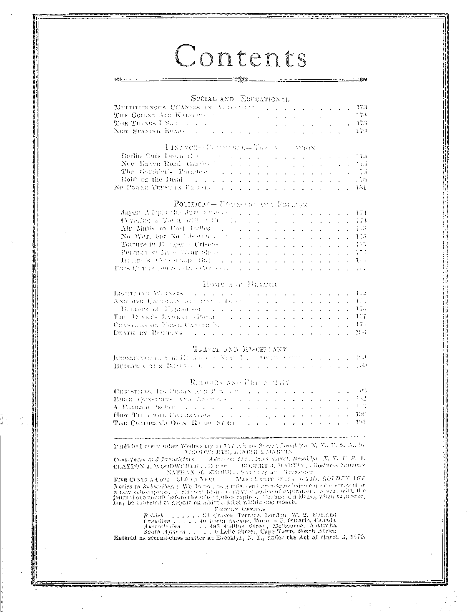
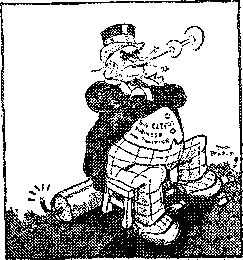
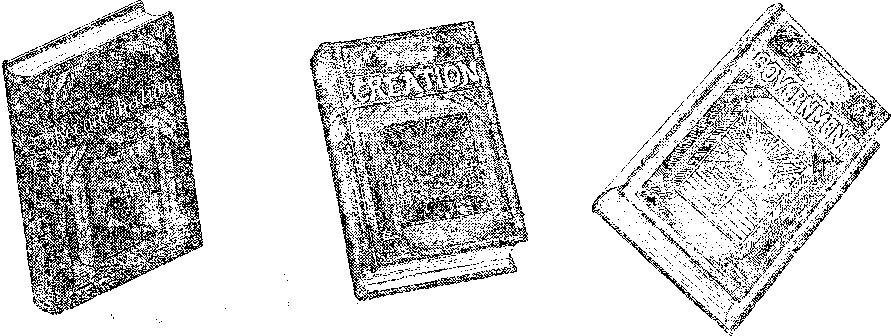

in thi8 is^ue
Is churchianity saturated with paganism?
description of disaster and ruin
Israel’s! law covenant, its purpose aud its end; discourse broadcast by Judge Rutherford
E V E R Y O T H. E R. W E D N E SPAY 5c a copy -■ 81.00 a year - Canada A Foreign $ 1.50
Volume X - No. 241 December 12, 192 8
Volume X
Brooklyn N. Y., Wednesday, December 12, 1928
Number 241
Christmas, Its Origin and Purpose By r. h. Barber
WITHOUT doubt, a very few have ever taken the time to investigate the origin and purpose of the day which we call Christmas. Nearly everybody takes the easy course, and takes everything for granted -without taking the trouble to investigate. As a result nearly everybody is convinced that Christmas is the most notable day in. history because they think it celebrates the birth of our Savior. Until about a year ago, I had never investigated this subject myself. Like everybody else, I had taken it for granted that it was a religious festival and that the Bible authorized the observance of the same.
I had concluded that it was proper to observe the day for the following reasons: It was claimed that it was associated with the birth of our Savior; it was backed up by many centuries of popularity; it vTas a day of good cheer and festivity ; millions of people seemed to get so much enjoyment out of it; and the giving of gifts at this particular time seemed to emulate the example of our Savior, who has given so many gifts to the children of men, and who said that it is more blessed to give than to receive.
A Proper Subject of Inquiry
The Scriptures, however, tell us to “prove all things; hold fast to that which is good”. They also urge the Christian to.“be ready always to give to every man that asks you a reason of the hope that is in you”; and they warn us that a true Christian should not be carried away by every wind of doctrine, but that he should be able to give a “Thus saith the Lord” for what he believes and teaches.
Many others have investigated this subject before I have, and it is to them that I am indebted for suc-h a mass of evidence that it is impossible to doubt, its origin and purpose. Both Webster’s and the Standard Dictionary tell us that 11111111111111111
Christmas day is of pagan origin. So do all the encyclopedias. In its issue of December 26, 1927, the New York World carried a full-page article on Christmas, which showed beyond a doubt that the day was observed by various heathen nations for many centuries before the birth of Christ. On the same date, the Chicago Tribune, the Cincinnati Enquirer and the St. Paul Daily News carried shorter articles proving the heathen origin of the day. So did some of the larger magazines of the country. Should any one desire to investigate the subject further, after reading this article, I would recommend a perusal of the following four books: Kitto’s Illustrated Commentary; Wilkinson’s Egyptians; History of Medieval Drama, by Robinson; and The Two Babylons, by Alexander Hyslop, an English clergman. The last-named book is specially interesting in its revelations, not only on the subject of Christmas, but also on other holidays and feast days new so popular.
Be Not Offended at Truth
I fully realize that what I shall say will not please some. However, I assure you that I have no desire to offend any one, nor to be unkind to any one. I am speaking from no other motive than to help you each and all to be better servants of the Lord. I do not wish to offer destructive criticism, but it is my desire to offer that -which will be constructive; something that will help you to understand that Jehovah God has a subtle, wicked and vindictive enemy; and that this enemy is G od’s-enemy anll|dhiliiiiil|l and the <rieiny of all who are trying to do the Lord’s will, and also the enemy of all righteous* nesi.llsril-1 jltilililllllluly lijiiiitbiiisi-iiil- 11^1111111111111111
This enemy has but one purpose, viz., to .mock iGiiiiiiiiHiiiiiii|iiiiiijiiiiiiiiiiiiiiiiiiOiif^ who are trying to serve God, by hiding the truth from them. To do this, this enemy sets up false doctrines and deceives the people into believing that these doctrines are taught in the Billie, and thus brings reproach upon God and His Word. Millions of intelligent people despise God, and doubt the reliability of the Scriptures, because they are led to believe that the false doctrines of eternal torment, trinity, immortal soul, the divine right of kings, and the divine right of the clergy are taught therein.
The Fountain of all Error
All false doctrines come from the ■ Devil. The apostle (1 Tim. 4:1-) warns us against false doctrines in the last days, our day. I quote: “[This know,] that in the latter times some shall depart from the faith, giving heed to seducing spirits, and doctrines of devils.”
This enemy also foistsjipon the people many rites, forms, ceremonies, feast days and holidays, and makes the people believe that these are commanded of the Lord; then lie makes these appear attractive by surrounding them with a glamour of piety, sanctity, and sentimentality, in order to further his deceptions and keep the people in bondage to ignorance and superstition, so that he may the better control them.
This enemy will he at once recognized as the Devil. The Bible tells us that the Devil comes as an angel of light ; which means that he uses religion as a cover to conceal his deceptions, for it is well known that deceptions put forth in the name of religion have greater influence than any other form of deception. The Devil assumes to he a friend of mankind, when in reality he is mail’s worst enemy. He tempted mother Eve in Eden, by professing to be her friend. I want to reveal this enemy in all his hideousness, so that none of my readers will encourage or support his wicked designs in the future.
If I can show that Christmas day is a fraud, and an injury to people in general: that it'pro-motes selfishness, dishonesty and falsehood; thui the Devil is its originator, and that his purpose wa?. and is, to hide some of the most im-;^|:ftlhi:lS8^1liWtiful truths of the Bible, then
author of ilio day, and his purpose was t<, deceive, then we should expect that no good thing could be said about it, because Jesus said of the Devil, ‘''There is no truth in him. When he speaketh a lie, he speaketh of his owm: for he is a liar, and the father of it.”—John 8:44.
Practical Objections to Christmas
Before giving the Scriptural presentations, I wish to enumerate some practical arguments against -the observance of Christmas.
Because of the unusual demands upon the people’s time and purse, at this season, and the unusual amount of work involved in purchasing gifts and arranging the festivities, it is always a time of nervous tension and worry. Thus it has become a real burden to the people, and many times do we hear people say, “I shall be glad 'when Christmas is over.”
Again, there is no command to observe the day to be found in the Bible, but we are commanded to observe the memorial of our Lord's death. Satan, however, has taught the people to give more prominence to the birth of the babe Jesus than to the death of the mail Jesus, in order to hide the importance of the ransom, the chief doctrine in the Christian religion. Satan knows full 'well that if lie can east a halo about the babe Jesus, and get people to feast and fast and work and worry to celebrate His birth, they will, to a large extent, overlook and forget that it was the death of the man Jesus “'which taketh away the sin of the world”, and that without the shedding of the blood of the JL.-1A’’ Jesus, there could be no remission of sins.
With this purpose of keeping the ransom work of Jesus in the background, the Devil has caused the world to be flooded with cards, poems, sermons and pictures of the babe Jesus and His mother, until they are worshiped and reverenced far more than the risen Lord. Satan does not want the people to know about the value and necessity of the death of the man Jesus and of his resurrection.
Then, too, scholars are agreed that December 25 is not the date of the birth of Jesus. December is a winter month, in Palestine, and no shepherds are keeping watch over their flocks at that time of the year, as the flocks are not in the fields then. The true date of our Lord’s birth is about October 1. (See Studies in the Scriptures, Vol. 2, pages 54-62.) ,,, :: -
Then again, everybody is well aware of the fact that the profiteers rob the people during the Christmas season; that the spirit of rivalry
and competition enters into the giving of gifts; that the poor people give more than they can afford; that often honest debts are never paid because people spend so much at Christmas time that they can not pay their debts; that millions of useless presents are given, which not only waste money, but are just so much junk in the homes, and a few days later find their way into the waste 'basket. Chief among these are the Christmas cards on which the profiteers make a profit of from 500 to 1000 percent.
Often a gift places the one who receives it under an obligation to the giver, a very unpleasant feeling if one does not have tire money to make a gift in return. Oittimes gifts are given for the selfish purpose of receiving gifts in return. Still again, Christmas trees are laden with expensive gifts for the children of the rich, while the children of the poor go Iio me from the Christmas entertainments with aching, hearts, with an orange or five cents’ worth of candy or peanuts as a sort of sop.
One of the worst features in connection with Christmas is the habit which parents have of telling lies to their children about Santa Claus’ coming down the chimney and filling their stockings; and then in later years they wonder why the children tell them lies. These lies may he little fibs ah first, but the result is a wicked habit formed by the bad example of the parents. The parents are reaping what they have sown.
Aro Honor to Jehovah God
Still again, every one is aware of the spirit of frivolity, debauchery, drunkenness and revelry so prevalent during the Christmas season, and the propensity to overeat, with the resultant siek-headaehes the next day. Surely none of these things honor either Jehovah God or His Son, our Lord Jesus. Every one knows that they are a disgrace, and yet the Christmas season is prolific of all these excesses.
These reasons alone are sufficient to condemn all Christmas festivities, but these reasons are secondary. There are other vastly more important reasons found in the Bible.
According to Genesis 3:15, God told the Devil that the seed of the woman would eventually bruise the serpent’s head. In plain words, God said that <■ future seed cl th>; woman would iii|l|ually destlpgiiiliiDm^ iefieirr
wc==t that is to dost ’'inn that Lad the power of death, that is, the devil”. The Jesus who died on the cross, and whom God raised from the dead on the third day, and who now has “all power in heaven and in earth”, is the One who is to destroy the Devil. The babe Jesus will have nothing to do with destroying the Devil.
What Satan Would Like to Do
When God told Satan that a “seed of the woman” would destroy him eventually, the words “'seed of the woman” would suggest to the mind of Satan the thought of a mother and a. son, and that the son would be the one who would destroy him. Consequently, that son would be the mom tai enemy of Satan. Satan, however, at that time, did not know who the seed was to be, nor when the seed would appear, nor when lie (Satan) would be destroyed. Paul shows us that the “seed of the woman” who is to destroy Satan, is Christ, the Messiah.
The text already quoted (Hebrews 2:14) says that Jesus became a man and died ‘that He might destroy the Devil’. All true Christians know that Jesus had to die and be resurrected to the divine plane of being in order to get “all power in heaven and in earth”, so that He would have both the power and the authority to destroy the Devil. Somehow Satan seemed to grasp the thought that the one who was to be: the Messiah must die and be glorified, and po he determined to make a counterfeit Messiah, a counterfeit “seed of the woman” for the purpose of deception, and also in order to confirm that first lie uttered in Eden, when he told mother Eve that she would not surely die. Let us see how lie did this.
Nimrod and Semiramis
Shortly after the flood lived Nimrod, a greatgrandson of Noah, and a very wicked and licentious man. He married his own mother, whose name was Semiramis. These two together engaged in hunting and drunken debauchery. Email y Nimrod, was slain, and the Devil used the wicked and eumiing^ mother; idiifbiiillilii false Messiah on the v.c-rld. Th* Devil insliget-. ed the plot and used
Sho announced that her s>o« and im.-iwad uad: been resurrected, and was now a g<M, <m invisible spirit, goth 82i=i succeeded in making the people believe ibis lie. Gemiramis was a wicked, duvwd and uascx-upulous woman, mud wanted j-'quh; plow f.u so she bchlD p”*
the cdabn that she was (be "womarih and Hia?
mentioned by Jehovah God. in. Eden, and that the resurrected Nimrod was the one who vas to
:Wrpent. Here was the beginning of the “mother and sm’ idea winch lias been por-ths heathen religions' of earth, and which has hr.-ti adopted into the sorcalled ChriNian religions of earth, and still erd'to in
by Satan, this wicked woman designed a symbol of all this deception, as follows: ||||tI’He- dead Nimrod was pictured by the dead ilW(;itunip ■ of' a: tree. Semiraniis claimed that an ' fevergreen tree grew up out of this dead stump in one night, and that this evergreen tree pictured Nimrod risen and glorified. Semiraniis also gave her son the titles, “the father of gods’’ - and ‘’tile branch”, and adopted the titles, “moth-- er of God’’ and the “queen -of heaven”, for hor-' . self. These titles are found in all heathen religions, and still persist in some cl the so-called Christian religions of our day.
Belittling ear S'srior
Now notice that a title applied to Jesus, in the Bible, is “the Branch”. Koiice, also, that evergreen is a Bible symbol of. everlasting life, but that Scmiramis used it io teach that Nimrod was the possessor of everlasting life. Nimrod, before liisgioath, founded the Babylonian Empire, and built the Tower of Babel. On the stone tablets, recently dug up in the vicinity of ancient Babylon, Nimrod is pictured with a mace crushing a serpent's head; in other words, he is represented as doing just what Jesus is soon to do, viz., destroy the Devil. Thus Nimrod became a false Messiah, and Satan succeeded in I:., getting the Babylonian Empire to accept Ills fraudulent and counterfeit Messiah.
- The Scriptures declare of the true Messiah that He would give gifts unto mon, and the yf...... Scriptures show that these gifts consist of a rcs-
; Urroetion of all the dead, and the further gifts of libnrtv, peace, happiness and everlasting life iiStofSi^ do the will of the Lord.
:3aai;&era’ble counterfeit of thesi- gifts which the Devil instituted.
; Dur presentAtay Christmas tree had its origin in that evergreen tree said to have grown up out of the dead stomp.. Semiramls claimed that the tree laden with gifts every year on the anniversary of the resurrection of Nimrod, and ' ■ thO’Niinr od ^acfeif thebe: gif S ' tier few IM
And no.v comes the explanaliou of the day of December being chosen as the birthday of our Lo-'J. The truth to that December 25 was Nimrod’s birthday, and thm all through the ceu-torim people have keen eelelnwitog tri.; date. Nearly all the heathen religions celebrate this date. Here, then, is where-the Christmas tree idea originated. However, the day Wasmot called Christmas, nor the tree a Christmas tree, until the heathen custom was adopted into the Christian religion, some time in the fourth century after Christ.
The Counterfeit Messiah
This false system, the counterfeit Messiah/ nailed in the Scriptures the “mystery of iniquity”., is in direct contrast to the “mystery If God’’, the true Messiah. This counterfeit system gradually extended to all other heathen nations by the help of Satan, who has led all the world captive at his will. With hardly an exception, all the nations have bad the same “mother and sori’ idea, with the evergreen tree and the giving of gifts in connection therewith; and nearly all of them adopted a date corareponding with-the 25th of December, as the dufe of the birth-, of the son. Candles were always placed on their trees on these occasions. i
In Egypt the “mother and sori’ were called Isis and Osiris: in India (to this day) they are called Isis and Iswara; in Asia, Cybele and I)e-oius; in Pagan Rome, Fortuna and the boy Jupiter; in Greece, Ceres with the babe at her breast, or Irene with the hoy Plutus in her arms; in China, Ching Moo, the holy mother, with a child in her arms.
In Japan, Scandinavia, Thibet and Mexico, wo find the. same “mother and son” idea, and also among the North American Indians.
“When the children of Israel, went into idolatry they served Baal and Ashtaroth, a mother and son, the spurious woman and her seed. (Judg. 2:10-13) No wonder JehovahyGoJvWas--angry with the- Iswiclilos when His ■..■wu loving plans were so miserably counterfeited and misrepresented, and His name rims slandered, and Ills beloved Son thus mocked. The very word “devil? means slanderer. 8ee Ezekiel 36: 20-23: Judges 8:33.
Other Idolatries of Mother and Son
Other names given to the son, the false seed of the woman, in different languages, are, Bacchus, Saturn, Molech, Adonis, Cupid, Tammuz, Achilles and Teotle; while other names given to the mother are, Rhea, Juno, Venus, Minerva and Diana of the Ephesians. The mother is always called "the mother of God” and "the queen of heaven”, while the son is called "the father of gods” and "the branch”. All the heathen religions of earth are based on the miserable counterfeit instituted by Satan through his dupe Semiramis. It is the same general idea, although some of the nations have adopted different customs, feasts and rites with advancing centuries.
In connection with, this idolatrous worship of the mother and son in all the heathen countries of earth, there were held numerous feast days and holidays. These were celebrated with the wildest orgies, licentiousness, debauchery and drunkenness. This fact is doubtless the basis for the Scriptural remark in Revelation 17:4, 5 which reads: "And the woman was arrayed in purple and scarlet colour, and decked with gold and precious stones and pearls, having a golden cup in her hand full of abominations and filthiness of her fornication: and upon her forehead was a name written, MYSTERY, BABYLON THE GREAT, THE MOTHER OF HARLOTS AND ABOMINATIONS OF THE EARTH.”
Santa Claus the Devil
In the Bible the true church is called a woman, a virgin; and the false church also is called a woman, but a harlot. This false system of ecclesiastic ism. originated in Nimrod's day, is also called "the mystery of iniquity”, because it is the most iniquitous thing that ever cursed the earth. It was originated by the great deceiver of the whole world, the slanderer of Jehovah God, viz., the Devil.
To help you get an idea of how successfully Satan has deceived the whole -world, I want to call your attention to the fact that the name and title "jolty old St. Nicholas” is a deception, for any unabridged dictionary or encyclopedia tells you that St. Nicholas is the name of the Devil. In the English language, we do not use the
and Santa Chw and St Nicholas ar® Be words in different languages
The Magi and Their Gifts
The Bible also tells the story of how this ■wicked creature called the Devil and Satan tried to kill the real seed of the woman, the real Messiah. In the second chapter of Matthew there is a story of how certain "wise men” from, the East (that is, from Persia), came to Jerusalem to locate the babe Jesus. The words "wise -men” are a translation of the word "magi”, which means magicians, who are men under the control of demons, and all through the Old Testa--ment, magicians, star-gazers, astrologers, necromancers, and those having familiar spirits are condemned by Jehovah God, and God commanded that they should be killed by stoning.— Lev. 20:27.
Jesus was born in Bethlehem, but Satan set a false light in the sky, which sentimental people call "the star of Bethlehem”, and by using this false light led the magicians to Jerusalem instead, to the palace of the wicked king Herod. Satan knew that Herod would try to kill Jesus, and the record shows that Herod, with devilish fiendishness, caused all the male children under two years of age to be killed so that Jesus could not escape. However, God protected His beloved Son against the machinations of the Devil.
The' Devil directed those magicians, but the angel of the Lord announced to the shepherds the birth of the Babe who was to become the true Messiah. It is interesting to note that the Devil's messengers bestowed gifts, gold, frankincense and myrrh on the babe Jesus, but the shepherds, God’s representatives, bestowed no gifts but went out and announced the fact that the Messiah was born, a thing which the Devil's representatives did not do. <
Let us Live the Truth
There could be no objection to the proper observance of the birthday of our Lord, an observance which would be an honor to His name, and especially if it were held on the anniversary of His birth, and in no way connected with the. miserable counterfeit of Satan, an observance which would be befitting to sanctified common sense and which would in no way be a deception, nor be made a source of profit by the profiteers..
When our Lord was on. the. earth, IJOO years ago, He established the tru,®. church... ■' This diwrdi eontinued faithful to the Lord during the lifetime of the apoetles; hut in his day the
Apostle Paul said, “The mystery of iniquity doth already work." (2 Thess. 2: 7) Yes, there had already begun an apostasy from the true faith. This apostasy consisted of an effort on the part of certain godless men to adopt all the heathen customs into the true church, and thus increase their membership by making it easy for the heathen to join the church.
The Bible records this apostasy in Matthew 13:24-28, where it tells us that Jesus sowed good seed, and an enemy came and sowed tares. In verses 37-39 of the same chapter Jesus explained the parable in these words: “He that sowetli the good, seed is the Son of man: the field is the world: the good seed are the children of the kingdom; but the tares are the children of the wicked one: the enemy that sowed them is the devil.”
The culmination of this apostasy was reached in the fourth century, when the tares had become so numerous in the true church that they could outvote the true saints, and adopted, in their entirety, all the customs of heathen idolatry and gave to these the name Christian. What a slander upon Jehovah God to have all the Devil's deceptions and frauds called after the name of His Son, Christian I
Easter a Heathen Festival
The “mother and son” idea was adopted into the so-called Christian church, and now we have “'the Madonna and her child”. The evergreen tree which, symbolized the birth of Nimrod, with its festivities, drunkenness and debauchery, was also brought over into the professing Christian church, but for the first time it was now called the Christmas tree. It is significant, too, that' the word “'Christmas” means “'Christ's mass'5.
The prominent heathen festival of Easter was also brought over and engrafted into the so-called Christian church. “Easter” is derived from, the name of the heathen goddess, Astarte, which is only another name for Ashtaroth, the mother of Baal. Easter and its festivals are supposed to be in honor of the resurrection of 1 h»> Lord Jesus. But 1 am at :i loss to know how the pomp and pride, the sell'ishnesa and vainglory, the ext ravaganee and splendor, the bunny rabbits and the hot-cross buns, the colored eggs and Hie cheap.} and poisoned candies displayed ai hauler nuv, can honor the great King ol kings and Lord of lords.
Away with Pagan Humbugs
Thus the so-called Christian church has been thoroughly paganized, and has become thoroughly heathen. The Devil has now succeeded in grafting his counterfeit festivals, feast days, fast days and holy days upon the church, and making it pander to all the pride and vanity and selfishness in the human family. Eight here I want to quote a witness of highest authority on this point. Cardinal Newman, of the Boman Catholic church, in a book entitled “Development” (pages 359, 360), speaking of the adoption of these heathen customs into the church, says: “These are the very instruments and appendages of demon worship, but they are sanctified by adoption into the church.”
Here, then, is the indisputable evidence that these customs are of the Devil and were adopted into the so-called church, knowingly. The Devil has succeeded in getting the people to adopt all his wicked schemes and to give them the name Christian, in order that thus he might mock the great Jehovah God.
For centuries the people have been humbugged with the worship of images, dead saints, relies, holy candles, holy water, Ash. Wednesdays, Christmas trees with their mythological nonsense and falsehoods about Santa Claus and his reindeer: with, eternal torment; trinity nonsense ; with the immortal soul idea; signs of the zodiac; birth months and birth stars; with beads, crosses, forms, rites and ceremonies, all of which have been and are God-dishonoring, foolish and childish.
Away with Demon Worship
Cardinal Newman 'was right when he said that “these are the very instruments and appendages of demon worship”, but he was wrong when he said they were “sanctified by adoption into the Christian church'’. The very opposite is true, viz., the Christian church was degraded and rapidly became filled with tares, children of the wicked one, so that in our day the church is reaping what it has sown, a church whose membership is made up of bootleggers, thieves, murderers, liars, adulterers, profiteers and igiafBlShlMlihas been dishonored and blasphemed and His tnuh has homr trailed in the? mud.-
How glad we are to know that very soon be exposed and the Devil himself is to be bound for a thousand years, so that he may deceive the nations no more. After the thousand years he is to be loosed for a little season and then east into “the lake of fire”, which means his everlasting destruction.
The Bible encourages the giving of gifts, and in most explicit language tells us whom to make the recipients of our gifts. There are no scriptures warranting us in giving gifts to those who do not need them'. Let me quote: “Whoso hath this world's goods, and seeth his brother have need, and shutteth up his bowels of compassion, ... how dwelleth the love of God in liim?”
. The Bible further advises that in giving gifts, we do not let our right hand know what our left hand does; but the way of so-called Christians is to hang the gift on a tree or publish the name and amount in the newspaper so that everybody will know about it.
Bulgaria the Beautiful
GORGEOUS rose; fields, deep valleys, dark primeval forests, hills covered with lilacs, snow-capped mountains, the blue Danube on the north and the Black Sea on the east, make Bulgaria, a land of natural beauty and the home of a contented, happy, industrious, prosperous and long-lived people. If it were not for the politicians and militarists at home and abroad Bulgaria would be a paradise, for the Bulgarians are a fine people.
The country averages 280 miles from east to west and 142 miles from north to south, and has an area, of 39,841 square miles. Its area and population are about the same as of Pennsylvania. The country is divided into fifteen districts, for purposes of administration.
The mountains are laiovn to be rich in minerals. The soil is excellent. The climate is healthful. The people are nearly all hard-working farmers. The cultivation of an appetite for sour milk has made them the longest-lived people in the world. Ages to 125 years are not uncommon.
From time immemorial the Bulgarians have enjoyed free rights over communal grazing and timber lands. Therefore the idea of communism does not present the same terrors to them as it does to the two-legged ciphers that have had their thinking done for them by the paid tools of the Power Trust.
Bulgaria is a granary for Italy. Fruit and vegetables are raised in abundance. Wine is |Bhtiful and cheap. Roses are cultivated for the production of the attar, exported to the value of $1,500,000 a year. Silkworms are bred, and tobacco forms an important crop.
Sofia, the capital, is situated in the western part of the country, on the main line of the railroad connecting Vienna and Constantinople. It lias fine government buildings, lias a university for both sexes, with 2,700 students, and is conceded to be the cleanest, most beautiful and most modern capital in the Balkans. Its architecture is a blending of Western progressives ness with Oriental stoicism. The population of Sofia is 154,025. .
Philippopolis, the ancient capital, located in central Bulgaria, eighty miles southeast s of Sofia, is well laid out, has fine parks and suburbs, and has a huge trade in silk, cotton goods, attar of roses, grain, rice, hides and tobacco. Its population is 84,891. '
The only otliex' city in Bulgaria with a population of over 50,000 is Varna, the principal port of Bulgaria on the Black Sea. (The Black Sea, by the way, is not black, but blue.) Varna is one of the termini, of a railway system :of 1,500 miles, and is connected by steamer with Constantinople, 150 miles south. Varna has a population of 60,761.
/I Glimpse at Bulgarian History
IKE the Hungarians, Turks and'Russians, the Bulgarians trace their ancestry to
Mongol or Tartar stock. When they first appeared in the Balkans 1,400 years ago, they are-described as fierce, dark-haired, cruel warriors, living in caravans, a terror to the Greek civilization; but. they settled down, as did our own ancestors, and became rooted to the soil.
A thousand years ago Bulgaria had possession of most of the interior of the Balkan peninsula south of the Danube. In 1.393 the entire country was gobbled up by the Turks, and from that time until 1877 Bulgaria had no history. The Turks ruled them politically, and the the Greeks religiously.
Bulgaria obtained her liberty at the Berlin Congress of Nations in 1878, at the conclusion of the Russo-Turkish war. Her history since then has been a stormy one of wars with Turkey, with the other Balkan states, and as an ally of Germany in the World War. Her militarists have been her curse, and yet have brought some blessings too.
When Bulgaria gained her liberty, she chose a German ruler; and though laden with the old false ideas of government by force, King Ferdinand also believed in education and did much to make the Bulgars a literate people. Illiteracy in the Bulgarian army in 1928 is 17.3 percent.
Bulgaria is the cradle of the old Slavic languages. The Russian language is traced to it. English ig more generally spoken in Bulgaria than anywhere else east of Germany. The old style calendar was abolished in 1916, and the Gregorian calendar adopted. 'The press of Bulgaria is freer than in any of the neighboring states. The national agricultural school is under the presidency of a young professor from the University of Wisconsin.
Bulgarians Not Warlike
IT SEEMS peculiar to say of a people that have recently been in a number of wars that they are not a warlike people; but that seems to- be the truth regarding the Bulgarians. Many of their troubles with neighboring states have been due to the selfish intrigues of the great powers.
It is true that the Greeks hate the Bulgars and the Bulgars hate the Greeks, and that they have been hating each other for 1,200 years. The Greeks hate the Bulgars because, as they think, the Bulgars have broken away from the true church; while the Bulgars hate the orthodox Greeks because, as they verily believe, the orthodox Greek church, is tyrannical, and, for that matter, so it is.
This mutual hatred and distrust leads to all kinds of unhappy squabbles. Imagine a freight car from. Pennsylvania being; stopped at the New Jersey border and all its freight unloaded and reloaded into New Jersey cars, all because New Jersey lines do not .handle cars belonging to earners of Pennsylvania. That is what the strife in the Balkans results in.
The Bulgarians would never have gone into the World War except for their ruler, King Ferdinand, He could not forget his German birth; and against the will of the people, and of the then Premier Stambulisky, forced Bulgaria into the war.
When defeat came he abdicated his throne as an het of honor’; but he did the dishonorable thing of vesting the government in the hands of his son, Prince Boris, in violation of the constitution. Three years after abdication lie tried to reenter the country, but was stopped at the border. He is now in exile, spending his time in the cultivation of rare plants.
Stambulisky and the Militarists
EFORE the World War, Stambulisky, one of the outstanding figures of recent Bulgarian history, was engaged in journalism and had a large following among the common people. When King Ferdinand threw Bulgaria’s fortunes into the war on the side of Germany, Stambulisky went to him and said: "If you plunge this country and its peace-loving people into an unnecessary war, sir, you will pay for it with your head and your throne. The blood of the people will be upon your hands, and the judgment of God upon your soul. I warn you now of your folly.” Ferdinand is said to have stood aghast, speechless and pale, but, regaining his composure, had this brave man thrust into jail for the remainder of the war. He came out-only to be made premier, and the avowed enemy of all corrupt lawyers, judges, professors, priests and bishops.
Stambulisky was a man of strong personality, a tireless worker, an extreme optimist, an excellent orator, an open-hearted and courageous leader. He told the new king, Boris, that he might play king, if he liked, but that he, Stambulisky, friend of the peasants and foe of the militarists and other representatives of the Devil’s organization, would do the ruling, and he did.
The natural result was that Stambulisky was assassinated, the militarists seized the government and ten-thousand peasants were slain in the massacre which followed. Even his enemies admit that Stambulisky7 gave Bulgaria an excellent government, even if he was severe on the militarists, lawyers and priests. Of course they were back of his murder.
Under Stambulisky no man might own and lease to others more than ten acres of land. Owners of land in excess of this amount were required to work it themselves. He was responsible for inflicting long sentences on those to blame for getting Bulgaria into the World War.
Stambulisky stood . more than six feet in height, had an enormous head, a formidable physique and an exceedingly heavy voice. Six weeks before his assassination he won the election with 544,000 votes against 460.000 for all opposition parties put together. At the time of his death he was but forty-four years of age. He was born of humble parents and entirely self-educated.
Boris and Tsankoff
WITH the death of Stambulisky, King
Boris, who seems to be specially interested in motoring, and not in much, of anything else, had the antithesis of Stambulisky in power as premier, in the person of Professor Tsan-koff, representative of the crowd that Stambulisky loathed.
There was violence on both sides; but the violence was started by the murderers of Stambulisky. Editors and public men were shot down in the street like mad dogs. Thousands of farmers wore mowed down by government troops. 'Two thousand were butchered on river barges and their 'oodles thrown into the Danube. .At least fifteen thousand ‘disappeared’.
Under the military rule of Tsankoff, prisoners were tortured; and in one instance innocent men were killed or half killed with axes and ■were buried while some of them still lived and were begging to be dispatched. In reprisals the farmers blew up a cathedral, trying to kill the whole of the Devil’s crowd at one time; but it was too big an undertaking and only made matters worse. After that Bulgaria was a shamble.
Stambulisky had made land reforms. The militarists undid them, but they did continue in force his laws requiring every citizen to donate a certain number of days of labor every year, for road and railway construction and repair.
Since the death, of Stambulisky a law has been passed making the holding of communist views illegal, and this, mind, in. a country which has had communal grazing and . timber lands from time immemorial
syisAtf dehgth; King;;®®®iM;
themselves sickened of the Tsankoff ministry, and a more moderate man, Liaptcheff, was
placed in power. He is believed to be ai just........ :......
man, trying his best to give the country a good ■■ ... government and a rest from wars. ■
Personal Traits of the People .....
THE Bulgarians boast of being a peasant . J- people, enjoying to the utmost the hard -work of simple country life. They look with ; suspicion on the cities, as well they may. Their ambition is not to drift cityward but to prosper on the farms, where they were born. ■........
One person in every 1,700 attains the age of-~......■
a hundred years. These are peasants, brought up to drink sour milk and eventually getting to like it. As all man's troubles start in his intes- ..........
tines, and the sour milk makes the intestines healthy, it is hard to kill a Bulgarian. Few of them have ever received ‘medical attention’ of . any kind. They keep well instead.
Elementary education is obligatory up to fourteen years of age. The Slav church is entirely ceremonial, nothing else to it whatever. The people are very fond of music, but there -is very little national music. Most of that played is of Turkish origin. .
The Bulgarians are very fond of picnicking, one of the simplest and sanest diversions of life. They are exceedingly industrious, and as fond of keeping what they earn as any Scot, but, like him, they pay their bills promptly,
Although, the country of Bulgaria has nearly -as many Jews as Rmnania, yet it has no Jewish question, and it has no Rumanian, Greek. Ser-bi an or German question. This speaks exceed- . ingly well for the people. A year ago the government gave expression to this trait in the following communique:
Up to the present time we have not dreamed fox* a single moment, nor shah we dream in the future, of depriving them of the sacred right of speaking their mother tongue, of bearing the names of their fathers and ancestors. All our minorities have their schools,- ......
where is taught the language of these minorities, their mosques and synagogues, where they pray to God in _ their own idiom. Thanks to this tolerance, which should be common, among all peoples, there is -question in Bulgaria of violating, the Oillil’
ities, there are no persecutions, no complaints. For ‘ this'-very reason •there-
and that is all any people needs. > - .
Lightning Workers By Dr. Charles T. Betts
WHAT chemical action upon potatoes takes place when they are cooked in an alnmi-num waterless cooker? Are their food values changed during the cooking process?
Does the same chemical action apply to vegetables other than potatoes? and are their vita-mines destroyed while being cooked in aluminum dishes?
Should meats be cooked in aluminum waterloss cookers or other aluminum vessels ?
Such questions are received in nearly every mail, which shows that the public are becoming interested in knowing whether or not their foods are being injured, destroyed or made deleterious by being cooked in aluminum utensils. The scientific answTer to such questions would probably not be understood by the average laity, so the writer will use an illustration which any one can comprehend, a simple aluminum device called -“Magic Silverware Cleaner”. The little piece of metal two inches square, one-sixteenth of an inch thick, was made of aluminum and possessed something' called “magic”. Ho-wever, the agent selling the device did not say it was made of aluminum. This quality of aluminum is known as the burning or “catalistic” power. It is very similar in this respect to other metals which possess high “activity”, as radium, etc.
It should he of great interest to all to know7 what happens to the silverware or why it becomes clean and looks polished within three minutes after each piece in the hot water comes in contact with a little soda and the “Magic Cleaner”. As no other metal used in cooking has this “magic” element, this writer thought for our health’s sake, it might be advisable to investigate what action the burning or electric power of aluminum might. have on potatoes cooked therein, with or without their “skins” or “peelings”.
The experiment with the “Magic” cleaner proved to be valuable, as-represented by the aluminum salesman. A whole kettleful of silverware was beautifully cleaned 'within three mi’HHes. saving a whole lot of time, polish and “elbow grease”. After this remarkable experience. this writer became inquisitive and a-kcd wife should krep on hand, thinking that such a powerful deaner would be of no value after if was used several limes. The reply was that one
cleaner was sufficient to clean a thousand batches or kettlefuls of old, tarnished silverware and that the cleaner ivould then not disclose over half a grain loss from its surface. This was indeed astonishing. What could the “'Magic” be, or the phenomena which produced a near ■miracle? Then, while pondering over what we had seen in our kitchen, my eyes viewed two statements joining each other upon the same page of our evening daily paper. -One of them was evidently paid for by aluminum advertisers and occupied about, a quarter of a page. It is quoted as follows:
[I’roin Toledo Blade, Toledo, Ohio, December 19, 1923] ASK YOUR DOCTOR
ASK A CHEMIST
ASK A METALLURGIST
He will tell you that the way to prepare clean, wholesome food is to cook it in
ALUMINUM KITCHEN UTENSILS
ALUMINUM COMPANY OF AMERICA
To complete the above circle they should have added one more item: ask your undertakeb. Otherwise the above ad needs no comment. It is the writer’s opinion that we shall need such men soon enough -without being assisted in their direction by aluminum kitchen utensils.
The other item was just a “home hint”, but by some peculiar coincidence the following item was placed in the column adjoining that with the above ad. The two statements were so at variance and so contradictory that it seemed impossible that any newspaper could make such a mistake as placing them side by side. Here is the quotation, word for word, as it appeared in the Toledo Blade, Toledo, Ohio, December 19, . 1925. ' '
LIGHTNING WORKERS
COOK YOUR RHUBARB' OR FRESH TOMATOES IN THE
DISCOLORED ALUMINUM PAN. THEY WILL ACCOMPLISH IN FIVE MINUTES MORE THAN YOU COULD BY SCRUBBING FOR AN HOUR.
After reading the above quotation, we decided to clean all our old silverware by placing a tomato in an ordinary aluminum dish, -with a pinch of soda, and in this manner the dish, as well as the rih erwaro, would be cleaned. Aluminum evmpauies advise in their printed material, that the tomato used for the cleanin'’, purpose shonld be eaten", but we advise throwing it away, especially after it had been performing; “lightning” service. However, it is my opinion .I<'2 .. • . : , . ■ ■ ’ '
that aluminum kitchen utensils are the '‘lightning workers”* instead of the tomatoes or the rhubarb. .
If a very small piece of aluminum is “magic”, and a larger one made into a dish is “lightning”, it is this writer's opinion that the vitamines so 'necessary to life may be “electrocuted” or otherwise so burned that they are destroyed when they come in contact with the metal, ft may be well to look into the scientific side of the question from the viewpoint of prominent medical authorities and learn if the electric charge or the activity of aluminum compounds affects food accessory substances, called vitamines.
Now we come to the meat question. It takes an average of 101 pounds of oxidizable food material which must be consumed (burned) by the animal before it can possibly produce three pounds of meat (or ash), mostly an alkaline substance mixed with liquids (urine, etc.); therefore? meat is not a food for man, but a substance which is a result produced from eating or the consuming of food. The vitamines have all been used up in the “meat making'” or “growing'’ process. Therefore cooking meat does not destroy any of the elements of life, because they are already dead before cooking. This is why meat is used, principally, to please the palate, like whiskey, and is a similar stimulant, which causes bodily activity in order to rid itself of such intake. Aluminum is an acid metal and has an attraction for alkaline substances; so meat becomes the attacking element upon aluminum cooking utensils and dissolves large quantities from the ware, destroying it. The larger quantities dissolved from the cooking dishes therefore become mixed with the meat or gravy, and a powerful poison is produced; so the ingested aluminum compounds may make dangerous the eating of meats thus prepared, and-especially is this true of chicken standing in the ware after being cooked. Fruits and vegetables, on the other hand, are attacked by the ware, and their food values (vitamines) destroyed. High United States health officials and ex-officials do not agree in this matter. At the present time, one set of men in high official authority advise
Multitudinous Changes in Afghanistan
T^OL LOWING the world-wide practice of com-*■ pel ling everybody to look and think and be has sheared all his legislators of their hair, against the cooking of acid foods (fruits and vegetables) in aluminum utensils, and on the other hand our ex-officials like Dr. A. S. Cushman and Dr. Harvey Wiley caution against cooking alkaline foods (meats) in such ware. It may be possible that if we follow the advice of both, this writer believes, we shall exercise good judgment in avoiding the use of aluminum for any cooking purpose.
Object lessons are sometimes needed. Often in newspapers are reported cases of group poisonings, people made desperately ill at banquets, dinner parties, etc. Such reports have come from various parts of the country. Hundreds of persons made violently ill from eating foods most carefully selected and prepared by their own people for some public gathering-, turning joy into shock and grief and anxiety and death. So often have these events included the preparation in aluminum ware of the food served that suspicion naturally attaches to this incidental fact. Sometimes the food is merely stored for a long period in aluminum. Sometimes it is also cooked in aluminum.
Directly after an extensive group poisoning occurs, many statements appear in. the public press in the particular cities where the poisoning takes place. The statements give the information to the public that aluminum is found in milk, eggs, cherries, all fruits and vegetables, in fact almost everything we eat, including baking powders, drinking water, etc., so aluminum is not a poison, there is no such animal,-etc. Other articles appear which tell of aluminum cooking utensils’ being used in many hospitals, in numerous hotels and at health resorts, where health foods are manufactured and that these facts prove that aluminum cooking utensils-are-not poisonous, etc.
Many of such articles appear in the daily edition of newspapers, within a few hours following the group poisoning. This hasled thblBfilbf; to believe that editors are constantly supplied with such articles in advance, so that when anything goes wrong with aluminum cooking ware at banquets and persons are poisoned, they are prepared for the occasion.
whiskers, turbans, sandals, loose and comfortable shirts and robes and has dressed them all in plug hats, Hoek eoats, gray trousers and patent k-ather shoes. They will use chairs also.
K.r DAUGHTER poisoned herself through continuous use of food cooked in aluminum vessels. I made her an. offer to read the articles on aluminum which have been published in The Golden Aye; but. she said, -'No.” In eight or ten days she got sick at her stomach and could not sit up. Her condition became more serious, Another daughter came to sq$ how she was and took her home to Oklahoma City. The doctor opened her stomach and she died;
I have iron vessels io cook in and am feeling much better.
Round Trip to Hell
TT7E ALWAYS claimed that hell is the grave, rpi[E new plans for the Sahara include the W and that everybody will make the round J- flooding of 10,070 square miles of land
trip. Now it seems there is in Norway a rail
road station named ITell and round trips to it are sold every day in the year.
Persian Ladies Lose Their Veils
THE Shah of Persia, following the example, of Kemal Pasha, has ordered, the ladies to remove their veils. A rule has also been promulgated that women shall be permitted to attend social functions.
Japan Adopts Jury System
TO QUIET the restlessness of the people and give them greater confidence in the courts the Japanese government lias now adopted the jury system for use in criminal cases where the penalty may be death or three or more years of imprisonment.
International Telephone Service
ALL points hi the United States, Canada and
Mexico are now connected by transatlantic telephone service rvith all points in Great Britain, Germany, Belgium, Holland and Switzerland, and with certain points in France, Den-■ mark, Norway and Sweden.
Dangers of Hypnotism
Dr. D. N. Buchanan, of Cambridge University, England, recently delivered a lecture in which he boasted of hypnotizing students so that they .could pass their examinations and stated that under hypnosis musicians can improvise brilliantly and many blind arid deaf persons can be curs'd. lie did not explain, and probably did not know, that hypnotism invokes and receives assistance from the demons and that they exact a terrible toll, frequently reason and often life itself, in the end.
Details of Sahara Plan
which is now from four to one thousand feet below sea-leveh It is evident that much of this land was at one time cultivated by the Romans, and possibly by some such plan as is now com-templated.
Covering a Town with a Curiam
WITHIN a few seconds, by the mere pressing of an electric button, a town in Germany may now be covered with a cloud of dense white smoke three hundred feet high, stretching over an area of five hundred square yards. It is intended to thus conceal German cities against air attacks.
Stocking Alaska with Buffalo
HAVING stocked Alaska well with caribou, moose and Tibetan yaks, the government has now turned loose in the vast Alaskan plains thirty head of Buffalo, two and three years old, from herds in Montana. It is anticipated that from this nucleus the plains of Alaska will be- .. come richly stocked with Buffalo and that it will become one of the world’s greatest game centers.
Girls Now Boss the Boys
A LONDON headmaster, with over fifty years’ experience, declares that since the advent of short skirts and bobbed hair the girls have become the bosses of the boys in. school life and that if the male is to retain his dominance it is absolutely essential that a dress reform a1 ever. Nobody can. deny that male garb is an absolute disgrace, wholly unsuited to its intended use, tight, stiff, impeimtrable to light and air. unpleasant to look at and uneom-
itiifiiM
..........11M
pwve that the dead an'not dead, and the Bible Stadents marched up and down the streets with sandwich hoards offering to sell a reply to
posed of 5,000 copies of Judge Rutherford’s
......itsmir
■*• mail line to the East Indies, and several planes have already made the six-thousand-mile flight. Eleven flights are planned for 1929. At the first of the year the British will put on a service over the same route which may operate every two weeks.
Ctrlin Cats Uxrn fbe Noise " \ \
BEBEWthas found a way to cut down the .......... poise. When an automobile or motorcycle
:/c~ . driver is politely
arrested, taken to the police court and given a lengthy awl courteous explanation of how to Stive with less noise. It serves all the purpose Mia fine and attains the' desired end of less "noisy driving. '
Preaching to the Power Trust
Rev. Dii. J. Stanley Durkee, Plymouth Congregational Church, Brooklyn, must have been preaching, to the Power Trust when, it is reported, he said in a recent sermon, “Live, laugh, love, grow, force everything to yield your soul command. Squeeze every pleasure as it passes, taking the last drop of sweetness from it.” We don’t see the need of telling the Power Trust toulo something they have already been doing.
Na War, but No EHsarmament
BY THE Kellogg Pact the nations of earth have agreed that war is a beastly and illegal business, but do you suppose that they have agreed or will agree to disarmament"? Not a bit of it. They have been discussing it for ten years. Every fellow is willing that the other nation should disarm, but not his own. Right in the midst of the excitement over the Kellogg Pact conies the news that Britain, and France have agreed to double-cross America in their naval programs, which shows once more just how far anybody can trust a British diplomat, or a French one either’, for that matter.
COM EBODY tried to wreck a New Haven train bearing two million dollars in gold and 350 passengers, by driving a spike between the prrh of two rails. A track-walker saw it and, being unable to remove the spike, flagged the dHiiEihiiYhf®
T T SEEMS from the Federal Census of relig-*vdoiw "fovtfftye®: riiaUW
time nine kinds of Presbyterians, eighteen kinds of Baptists, nineteen kinds of Methodists ami twenty-two kinds of Lutherans, with a grand total of two hundred and thirloen hvD of Christians thwi prretising. Fitly ore-lit million: Americans are not identified with any church. :
Telephone Service Chile to Uruguay
S; H TH ri-w; E u'.re lb pvy u, "d e Action of a telephone n wk • ■ : i
Argentina and Uruguay, and we can he happy with her. These achievements are doing moi 6 for the world than all the battleships, armies and churches could ever do. The cities of South America are beiii" lapidL paved, sewered and put in first class condition. - ?
The Gambler’s Paradise
HD HE gambler’s paradise is tre New York ■L stock exchange. In November a seat, which • carries with it the right to gamble in the greatest gambling hall in the world, was sold for $525,000. What farmer would be willing J:o pay -$525,000 for the chance to gamble with the " weather, the weeds, the pests and the markets for his crops? If he paid that much, would- Im g find Ids farm a profitable venture ? ■ :
Torture in European Prisons ■■■UN
ITALY, Poland, Russia, Rumania and Lithu
ania are named by the MancheMi r (.inaidian as countries in some or all of which political ‘ prisoners are kept in iron eages, or in prison cells the size and shape of coffins, women are kept under male warders, confessions are extorted with clubs and even with red-hoi irons, and in not a few instances inmates have been ’driven to insanity. Mind! These things are taking place to your fellow men in this very year of J 928.
Navigation of Airplanes by Cables
FRENCH inventor, Professor Loth, has demonstrated that airplanes can be guided by induction currents from cables buried underground or in the depths of the sea. It is believed that this invention, now being installed at Le Bourget flying field, will enable the flying of planes without the aid of navigators. All the aviator will have to do is to follow the cable.
Autogyro a Complete Success
e La Cierva’s autogyro is evidently a complete success and solves the question of how to descend from the skies within a small area. "When it came down at Le Bourget, France, after its first flight across the English Channel, it moved loss than three yards after striking the earth. The speed is a hundred miles an hour. The autogyro is a slow riser, but the takeoff may be made after getting up speed by running in circles, something not possible with the ordinary airplane.
Trousers in Persia and Bolivia
IN THE mad rush to get everybody into tailor-made clothing the Shah has now ordered everybody out of their comfortable clothing and into the coat and trousers of the most uncomfortably-dressed beings in the world. When this same rule was recently enforced in La Pax, Bolivia, it is said that ten thousand persons marched the streets in a demonstration against the rule. Probably the number of marchers was exaggerated, but possibly not. La Pax has a normal population of 100,000 persons.
Portuguese Must Wear Shoes
THE edict that everybody in Portugal must wear shoes seems like a most arbitrary ruling. It looks very much as if somebody I ml a surplus of shoes to sell and had got next to the ruling powers of Portugal and had them frame up this law so as to turn the shoes into money. Jtwill be remembered that Uncle Sam put the Porto Ricans in shoes when the natives were being prepared for their partin the World War, backs
eonie to think of it, why should any one man have the nerve to tell another what he must-wear on his feet?
Jawbone Was Really a Jawbone
TRAVELER in Palestine reports having seen a sickle which was literally made of the jawbone of an ass. Six of the back teeth had been removed and knives inserted in their place. Very evidently the weapon with which Samson slow the Philistines was a. weapon with which all the agricultural people of his time were well acquainted.
Robbing the’De&d
HINESE thieves have* robbed the royal tombs of some $50,000,000 worth of jewels.
That is a mean trick, but not half as mean as the Power Trust has been doing, for they have been robbing the common people, charging them extortionate rates, and then forking these} excess earnings over to the Wall Street crowd for speculation purposes. On top of all that, they have been hiring everybody in sight and out of sight to proclaim from the housetops that that way of doing is the only possible way to keep the country from going to the dogs.
Ireland’s Censorship Bill
HE Irish Free State has under consideration a Censorship Bill, and this in a time of peace! Concerning this bill Senator W. B. Yeats, a prominent member of the legislature, a Protestant, recently said to the reporter of the Manchester Guardian:
The Free State Censorship bill, if it becomes law, may inflict a dangerous wound on the Irish intellect. At, the least, it will degrade us in the eyes of the modern world. The object of the whole bill is to hide knowledge from the eyes of our young people, lest, knowledge should be abused. There is the taint of hypocrisy about the whole proceedings.
The young people of Ireland do not deserve to be treated as if they were fools or dolts, and I do not think they will stand it.
They need no more protection than the young people of England or France. Let our zealots do what they will, they can not retain the old order unchanged in Ireland. The new world keeps breaking in. Our young people are right to welcome it, and they must learn to choose the good and eschew the evil for themselves, ■
There was a public burning of Judge Rutherford's book Deliverance in the
of God's kingdom out of the Free State.
The Diner’s Lament By Roy 'Atwell
IN THESE days of indigestion
11 It’s oftentimes a question
As to what to eat and what to let alone, For every microbe and bacillus
Has a different way to kill us,
And in time they always get you for their own.
There are germs of every kind
In anj7 food that you can find
On the market or upon the bill of fare.
Drinking water’s just as risky
As the so-called deadly whiskey,
And it’s often a mistake to breathe the air.
The inviting green cucumber
Gets most everybody’s number,
While the green corn has a system all its own. Though the radish seems nutritious,
Its behavior is quite vicious,
And a doctor will be coming to your home.
Eating lobster, cooked or plain,
Is merely flirting with ptomaine,
While the oyster sometimes has a lot to say.
And tire clams you eat in chowder
Make the angels chant the louder,
For they know' that you’ll be with them right away.
Eat a slice of nice fried onion
And you’re fit for Dr. Bunyon;
Apple dumplings kill you quicker than a train.
Chew a cheesy midnight rarebit
And a grave you’ll soon inTiabit.
Oh! to eat at all is such a foolish game.
Eating huckleberry pie
Is a pleasant way to die,
While sauerkraut brings on softening of the brain.
When you eat banana fritters,
Every undertaker titters,
And the casket-makers nearly go insane.
When cold storage vaults I visit,
I can only say, “WTiat is it
Makes us mortals fill our systems with such stuff r
Now, for breakfast prunes are dandy,
If a stomach pump is handy,
Or a doctor can be found quite soon enough. Eat a plate of fried pig’s knuckles
And the headstone cutter chuckles, *
While the gravedigger makes a.note upon his cuff.
Eat some lovely red bologna,
And you’ll wear a wooden kimona
As your relatives start scrapping ’bout your stuff.
All these crazy foods they mix
’Will float you ’cross the River Styx
Or they’ll start you climbing up the milky way.
And the food you eat in courses
Means a hearse and two black horses,
So before they eat some people always pray. Luscious grapes breed ’pendicitis,
And their juice leads to gastritis,
So there’s only death to greet you either way.
Fried liver’s nice, but mind you
Friends will soon ride slow behind you
And the papers all will have nice things to say.
—Royal League News Letter,
THIS cut, made for us by our esteemed cartoonist, J. C. Pluimer, is too small. It ought to be about ten feet square and pasted on every bill-board in the •U. S. It represents big clergy, big business and big ' politicians comfortably seated on a stool, with their left foot cheerfully smashing the stuffing out of the
This Cui Is Too Small
common people. According to our •cartoonist, however,
if there is a surprisbiiBiMiililii sterii-lookin|icsg|i|||i|||l||hiiB^ him isctheigiiiifliiliilliiil®
minute, and to the great excitement and ultimate relief of the people.
Constipation First, Cancer Next
Mb. J. Ellis Barker, London, lias gone after . the surgeons and “researchers” in a book on cancers which is causing British people to sit up and take notice that all is not right with the medical profession. The book has the backing of Sir Arbuthnot Lane, one of the most justly famous surgeons now living. Sir Arbuthnot uses his brains before he starts cutting.
Mr. Barker goes after the researchers hammer and tongs. He says that they have been so busy-looking for a cancer “germ” that they have overlooked the common sense end of the investigation, whether what we put into our stomachs is not the cause of it all. Tie tells us what we ought to have sense enough to know without 'being told, that cancer and chronic constipation are practically synonymous.
Cancer is a disease of civilization. Where the people live on fresh fruits and vegetables, and drink plenty of water, and where they can not afford aluminum cooking utensils, cancer is practically unknown. Mr. Barker concludes that cancer is not due to a microbe, nor to obscure cell degeneration, nor to chronic irritation, nor to old age, and is not a local disease. We quote a few paragraphs from his book:
The failure of cancer research and of cancer treatment is obvious, startling and disgraceful. It is one of the greatest scandals of modern times. It calls for a searching public inquiry. The researchers are trifling with the cancer problem, and arc misleading the public, and thus they are chiefly responsible for the terrible increase of the cancer mortality.
Between. 1911 and 1926 cancer deaths in England and Wales have increased from 35.902 to 53.220, or by fully fifty percent, while during the same period the total mortality has declined from 527,810 to 453,804. In 1911 one death out of every eight was due to cancer. In fifteen short, years the relative cancer mortality has practically been doubled. These figures suy-fice to condemn the methods of investigation and of treatment hitherto followed.
I am not. a disappointed claimant for the funds of the research organizations. I have never applied to them or to any other organization, or individual, for money to pursue my inquiries. The work which I have done has been financed from my own limited moans, for I should have felt ashamed and humiliated to accept tainted money from any of those bodies which I have felt compelled to hold up to public obloquy and execration.
Cancer never attacks a healthy tissue, but only those organs or parts of the body that have become devitalized by constant abuse.
After middle age in a person who has persistently offended his stomach by misfeeding, cancer will attack the stomach. In a ease where a ragged, hot pipestem has constantly worked on a lip or tongue, the disease will attack that spot.
The average town-worker should avoid meat and fowl. He should cat plenty of fresh fruit and. vegetables, and, most important, of all, drink three to four pints of water a day. Fish and eggs may be eaten.
If he can not obtain exercise in the ordinary way he should do physical exercises every day. Natives are constant exercisers. Even their mueli-laughcd-at stomach dances are nothing more nor less than stomach exercises.
Moat is just poison to the average unhealthy man.
Those who regulate their feeding and health in the wise way will not die of cancer in their later years.
A mild, non-stimulating, natural diet, consisting largely of fresh uiimanipulated foods, diminishes the pain and discomfort of the cancerous, and prolongs their lives.
We may well believe that wise dietetic treatment may occasionally lead to the cure of cancer.
The Things I See By a Mother
NESTLING close under a chain of protecting Hills that surround a tiny tree-lined valley -Ties a town of perhaps three hundred fifty or ••••four hundred families. It is a pretty town, with, clean streets, good homes, and is fast acquiring iU quota of public buildings of good arcliitec-lure. Its residents are mostly of the middle • ■withvlf sprinkling T’iiBeis,
railroad officials, professional men and retired y 1M b y • yi .■ yy f •, • ,
to-poverty class. In fact, three-fourths of them own their own little homes. Two-thirds of the other one-fourth are of that class of working men who are compelled to live wherever the vagaries of their positions lead them. The other one-third of the one-fourth are just plain misfits, or, perhaps, of that class of unfortunates with whom fate is for ever at war. yy................
Being prosperous, up-to-date, not at all lacking in the sort of brains needed io keep any town on the- map so far as things of worldly in........... < terest are concerned, they feel it necessary to keep step with the larger cities that lie within a few hours’ ride by train or auto.
Being personally acquainted with many, and having the opportunity of getting accurate knowledge of the doings of many more, I am safe in picking an example from among the seif-constituted leaders of the town’s social structure.
The social life of this family is built upon the false standard of the world; and this life is not an exception, but the rule among those who style themselves leaders. These false standards are constituting a problem of the greatest magnitude to myself and to other conscientious mothers.
This family hovers in the closely protecting shadows of Christianity’s doors, while they carry on in anything but a Christian manner. There are six in this'family: father, mother and four children.
Papa is a hardworking dupe who steps to the tune of a grasping, social, aspiring mamma and elder daughter. The three remaining children ape mamma and elder sister' as closely as their budding years will allow, with the result that, to all sensible people, the entire family have become a synonym for foolish extravagance.
The elder daughter, not yet sixteen, flaunts her silken-dad self in the face of schoolmates and teachers alike in an atrociously foolish manner. The rouge and powder and lipstick she uses would keep an ordinary-sized family in meat on a two-week schedule.
Should she be reproved for her unseemly conduct and way of dressing, fond Mamma rushes to the rescue, and there is a scene distasteful in the extreme to all concerned.
Lessons are pursued only to the extent that enables her to “keep in the swim” with her classmates. .After-school hours are employed in strutting the streets and in ogling strangers or in going on a joy-ride with the callow youths of her acquaintance.
No wholesome teaching of the work of true ■womanhood enters into the home training; so there is plenty of time for daughter to pursue her own special brand of pleasure, with the result that other and more sensible mothers’ children become dissatisfied with the loving restraint placed upon them and kick up a row which is hard to combat in view of the fact that the average child of that age, today is smarter than were their grandmothers at an adult .age.
Simple games of childhood pall under the spell of moonlight rides and the singing of boisterous songs and flinging of vulgar repartee. Public hall and barn dances at distant villages thoroughly squelch the efforts of the mother who plans an evening of innocent fun for her children; and a surreptitious passing of a hootch-scented bottle, or a package of Camels, in the hallways and cloak-rooms of the high school seems to prove a source of fascination no amount of common sense can dispel. “Do it, if you want to be popular,” is the motto.
Parallel to their desire for uncurbed actions runs a cocksureness of self that would be laughable if it were not so pitiful and devastating in effect.
This same high school freshie of whom I am writing has come from a distant dance hall at two in the morning with questionable companions ; has entered a restaurant under the influence of drink and conducted herself in a way that makes one blush for shame at the thought. The next day she comes to school as usual, taking every opportunity to impart the questionable knowledge she had acquired during her night’s adventures to her other and more innocent companions. .
This is only a sample of the things which conscientious mothers must contend with. I can write of many more happenings similar to or worse than the ones I have described. Every parent faces these problems in every town, village and country home.
Some are heedless anti guilty of perpetrating the false standards that give countenance to such happenings; and some, a very few, are trying to overcome them as best they sake of their loved on.es. May Christ’s kingdom come quickly I • ■ ■■ MM
NEW toll roads of the most modern con- with, lateral ways for cycle and motorcycle straetion are now budding in Spain. They traffic. Spain is making a bid for tourist fraf-will exceed in width, any other roads of the kind fie and will build a series of concrete highways in cither Europe or America and will be built encircling the country. ■
Experience in the Hurricane near Lake Okeechobee By Mrs. E. Hunter
ON SATURDAY night, September 15,1928, am) did not sleep well on account of the high northwest wind blowing brom the lake. Our house was situated on the shore of the lake. The wind increased steadily. About 11 a.m. Sunday, Walter Lowe, a friend, came in his car to take us to his house, 'which is four miles farther north. Ue had read in the morning paper of the severity of the approaching hurricane. But we thought our house as safe as his and the ridge higher here. Many left for other places. One of our neighbors, who has always been very friendly to us, called in the afternoon and stayed until 6 p.m. He said lie would return at 9 p. in. and that the best thing for us to do was to remain in the house.
The storm grew in intensity, with all the marks of a tropical hurricane. The noise was so deafening that it was with difficulty that my husband and I could hear each, other speak. We stood at the open door with blankets around us. The water then was knee-deep. Shortly the window near us blew out, broke in pieces and fell across the doorway. The house shook and rec-led under the repeated blasts of the storm.
We realized then that it meant certain death to remain in the house; so we picked our way the best we could over the debris and out of the doorway into the darkness and the fury of the storm. Our house was built in a hollow. The ground rises to quite a hill toward the road away from the lake. We ran to this high land and threw ourselves on the ground, holding on to the grass. We peered back to the house, straining our eyes in the darkness, and soon saw the gleam of the metal roof on the ground; so we knew that the house had collapsed and that we had left it none too soon.
We remained on the hill for some time. Then came a lull in the storm, and we thought it better to try to get to one of tire neighbors. We .found our way to the road and stopped at the ■'first house, only to find it surrounded by water. We .got into the next house, wading through water. Wo were treated very kindly, provided wills, dry do'-himg etc.
Thore were seven of us together in this house and we all sbought the storm was over. But n«, it returned with renewed fury. Some of the roofing had already been torn off. Now (he destructive work went on and soon the whole roof was torn away from the main part of tile building, the kitchen remaining intact. So the seven of us gathered in there. When it seemed almost certain that this also would be -wrecked, we decided to face the raging elements and the darkness.
This was the worst part of that night of terror, for soon we were all in the water to the waist. I slipped and fell into a deep hole and the water went over my head. It seemed that the end of the way had come for me. The thought crossed my mind, ‘T hope it will not take long to die.” But evidently that -was not the Lord’s will. My husband seemed to have superhuman strength given him. He reached down and pulled me up.
We seven then struggled on till we came to a wire fence with, the top above water, which gave us a hold, and we dung to it for some time. Then we went on trying to find a footing. We were fortunate to discover a plank and we rested there as best we could. The rain came down in torrents. It felt like hail, and oh, so cold! We could not see whethei* Hie plank was on the road or on. a pile of debris.
We remained there quite a while, when some one suggested that we try to get to a house for shelter. Two of the men, with the aid of a flashlight, picked their way to the ridge and shortly returned with the report that there was a house nearby with the roof still, on. How thankful we all were to get out of the rain. In our wet clothes we shivered with the cold and longed for the first ray of dawn.
The light of day never seemed so welcome. As we stepped out and saw the terrible wreckage, we marveled that we were still alive. We returned to Mr. Hansen’s house and found that the kitchen had stood the storm, the ropf being still on. If we could have foreseen that, it would have saved the worst part of the sad experience. However, ive had used our best judgment ; that is all any- one can do. If evil follows, God can overrule it for our eternal welfare.
Along the ridge not many houses are standing, only the well-constructed ones. We, with many ■ other refugees, found shelter in the schoolhouse, W'here we stayed for two nights, sleeping on the floor with quills under us.. The Bed Cross soon came into charge and provided food for all.
On Wednesday, about 5 p.m., we took the emergency bus (provided by a coast county) for Fort Lauderdale via West Palm Beach. The way out of the lake region was rough. Connor’s highway was overflowed with water the greater part of the way. It seemed at times as if we might get stalled. It was like driving between two canals. Our careful driver made the grade, and we breathed a sigh of relief. When we reached the twenty-mile bend (which is halfway) and were over the bridge, there was a dry road all the remaining way.
We arrived in West Palm Beach about nine o’clock in the evening and were received most kindly at the headcpiarters of the Red Cross. Two young men interviewed us and listened with deep interest and sympathy as we went over step by step of our experience in the dark night of horror that had overtaken the dwellers along the southeast shore of Lake Okeechobee.
We renewed our journey to Fort Lauderdale, cheered and comforted by the kindness and sympathy of oui' fellow men, and the provision made for our temporal needs by delicious refreshments. About 11:30 p.m. we arrived in Fort Lauderdale at the courthouse, where we were provided with comfortable lodgings for the night. We had a late breakfast and were then driven to our home three miles southwest of the courthouse. We found our house here unharmed, and we were truly thankful for all the kindnesses which had been shown to us.
Many are the lessons in store for the human family: and no doubt this sad disaster which took the lives of so many and destroyed millions of dollars’ worth of property will aid in turning the minds of the people toward God as the source of all help and toward His kingdom established on earth as the only remedy for every ill to which flesh is heir. The people will then learn to sing with heart and voice: “Praise God from whom all blessings flow.”
No Power Trust In Britain By L. Kinsey {England)
IT MAM interest yon to know that in most cities and towns in Britain electricity, gas and water are supplied by the municipal authorities, and the people would not dream of handing these services over to private enterprises. For household purposes in Manchester and district, an average price for electricity would be 5d (10 cents) per unit for lighting and 2d (4 cents) for heating and power.
Many people have what is known as the “Norwich Tariff”, which is a fixed quarterly payment of 20% of the 1914 ratable value of the property, plus |d (one cent), in some cases |d, per unit for all current consumed. This rate is favorable where current is used for cooking.
Many authorities hire out electric cookers at about 5/- or 7/6 per quarter. The Manchester Corporation Electricity Department commenced to do this about .four years ago and they have now passed the 4,000 mark.
Very many towns also operate their own tramcars and 'busses, and make them pay too. Not only so, the Corporation of Manchester builds its own tramcars, and is at present ex-iqiidihgyhe- works. ■ :The;mM^
not having dividends always in front of thorn, keep the rolling stock in much bettor condition. also the permanent way. They provide good uniforms for employes, better pay, shorter hours, and better working conditions.
I have enjoyed reading The Messenger, The description of the factory interested me very-much. We should like to have heard the lecture, from Detroit, but it was not the Lord’s will. We advertised it in the local press and hope a witness was given in this way. There is every indication of a change of government next spring, and I should not be at all surprised to see the Socialists in power. If that should be the case, maybe the way will be opened up for broadcasting the truth; and such, an event as that might even result in the removal of the Canadian restrictions. Anyway, we hope so.
The cooperative movement is making immense strides over here. The societies are opening new premises everywhere, and buying up shops here and there. The larger soci|ti|i||>ay?: their members ten percent and more each quarter on all purchases, in addition to interest at five percent per annum on all share capital, which includes any quarterly dividends which are not withdrawn; and you can buy almost anything frmsi xhe cooperative stores, and at the same prices, as a rule, as at any other stores, and membership is open to all,
Bible Questions and Answers
Y^UESTION: What is meant by “Gehenna, where their worm die ill not, and the fire is not quenched'’'!
Answer: The expression appears only once, in Mark 9:48. It does not appear in the oldest manuscript in either Mark 9:44 or 9:46, hut the passage is correct, no matter how many times it appears. Gehenna, Ge-Hinnom, the Land or Valley of Hinnom, and the Valley of Tophct, all refer to the same thing, namely, the narrow valley on the southwestern edge of the city of .Jerusalem, in which, in ancient times, the garbage was burned by the use of brimstone: and in which also the Jews were accustomed to east the bodies of criminals guilty of atrocious crimes, in the vain hope that thus they might prevent their resurrection from the dead. To the mind of the Jew, Gehenna was the most positive symbol of destruction. It was a place where the fires were never quenched and whore, if a corpse escaped the fires, it would surely be destroyed by the worms.
Question: Revelation 22:17 states, “And the spirit and the bride say, Come. And lot him that heareth say. Come. And lot him that is athirst come: and whosoever will, let him take the water of life freely.” When does this apply?
Answer: This scripture has application under the kingdom of God just at hand, when the people of earth MU be given the opportunity of appreciating the truth and of receiving life upon tills planet Earth. It will he noted that God dots not force anybody to drink of the life-giving truth. The statement is, “And whosoever will, let him take the water of life freely.” At that time th? words recorded in Isaiah 11:9 will he Adhllrd.: They shall not hurt nor destroy in all ivy holy mountain [kingdom]: for the earth shall lie full of the knowledge of the Lord, as the waters cover the sea.” It will be at that time that the words of Revelation 21:4 will be fulfilled, which state. “And God shall wipe away all tears from their eyes; and there shall be no more death, neither sorrow, nor crying, neither .shall there he any more pain: for the former things are passed away.”
Question: In reading concerning the raising Mi he daughter of Jairuc th<* statement is made in Luke 8:55, “And her spirit came
breath. The same word is used when we speak of a pneumatic tire, meaning that it is a. tire which may be inflated with air or wind. It is the same air or wind which man breathes. Thus the expression, “And her spirit came again,” is equivalent to saying, ‘She began to breathe the air.’ In harmony with this thought wo read concerning the creation of Adam, in Genesis 2:7, “And the Lord God. formed man of the dust of the ground, and breathed into his nostrils the breath of life [nesh-a-wiaw, wind]; and man became a living soul.” We would expect that when man dies the air which lie breathes would pass out of him. That is just what the Scriptures tell us does occur. In Psalm 146:4 wo read, “His breath gooth forth, he returneth to his earth; in that very day his thoughts perish.”
Question: Whrd; occasions mark the beginning of the promised kingdom?
Answer; The f of many prophecies
since 1914 marks the beginning of the kingdom of God. In the twenty-fourth chapter of Matthew the Master outlined the events that would mark the establishment of the kingdom. Xatioii rising against nation in the World War; famines; pestilences, such as the Spanish influenza; revolutions in. different quarters of the earth; the Jews returning to Palestine; the gospel, good tidings of the kingdom, being preached in all the world, as a witness: these and many other circumstances mark the beginning of God’s kingdom. The Prophet Daniel wished to know the time when the kingdom would be established: but the Lord, told him that he eould not understand the prophecies, and that they would be understood only by the .Lord’s people in the time of the end. In Daniel 12:4 we read, “But thou, 0 Daniel, shut up the words, and seal the book, even to the time of the end: many shall run to and fro, and knowledge shall be increased.” Truly the words of the Lord are being fulfilled. The lad of fifteen years knows more today than his grandfather a century ago. Travel by autos, electric trains and airships bears evidence of the fact- that many do run to and fro. All of the events relative to the establishment of the kingdom, are being fulfilled for the first time in the earth’s history, since 1914..fl
it needs no proof that all the nations are to-
what they see approaching.
[Broadcast from Station WBBR, New York, by Judge Rutherford.]
THIS morning consideration will be given to natural Israel, who long enjoyed the special favor of Jehovah God. Also the reason why He selected that people.
Watchtower Network
Broadcasting of the weekly WATCHTOWER HOUR through the newly or-organized WATCHTOWER chain of radio stations began Sunday, November 18. Every Sunday morning, from 10 to 11 (Eastern Standard time), this WATCHTOWER program, inchiding lecture by judge Rutherford, may be heard over the following stations:
WBBR New York; WOV New York: WCSH Portland, Me.; WOKO Poughkeepsie, N. Y.; WFBL Syracuse, N. Y.; WODA Paterson, N. J,; WGBI Scranton, Pa.; KQV Pittsburgh, Pa,: W.HK. Cleveland, Ohio: WMAL Washington, D. C.: WOE Washington, D. C.; WTAR Norfolk, Va.; WBT Charlotte, N. C.
Jehovah’s way is always right It is a great satisfaction to the seeker of truth to know that Jehovah God can never be wrong. “As for God, his way is perfect: the word of the Lord is tried: he is a buckler to all those that trust in him.”(Ps. 18:30) The meek desire to be taught and led in the way of God because it is right. God’s favors are for such. “The meek 'will he guide in judgment, and the meek will he teach his way.” (Ps. 25:9) The one who desires to be led in the right way prays as David prayed: “For thou art great, and doest wondrous things; thou art God alone. Teach me thy way, 0 Lord; I will walk in thy truth: unite my heart to fear thy name.” (Ps. 86:10, 11) Such receive the favor of Jehovah and His favor is that which is of greatest value. (Prov. 16:15) Such rest confidently by faith in the Lord. “For thou, Lord, wilt bless the righteous; with favour wilt thou compass him as with a shield.” (Ps. 5:12) “In his favour is life.” (Ps. 30: 5) These great and unchangeable truths set forth in the Scriptures stand boldly forth as a true guide for those who desire life and peace.
The lineal descendants of Abraham under the guiding hand of Jehovah found a domicile in the land of Egypt. God took them there to use them to make pictures foreshadowing His plan for the reconciliation of man. Egypt was a picture of this present evil world, of which Satan is the god. Abraham’s descendants, the Israelites in that land, were greatly oppressed and persecuted by the ruler of Egypt and Jn.« agencies. The Israelites had a great desire to be relieved from this oppression. In that condition they represented die peoples «»f earth suffering Under the oppressive hand of Satan and his agents and representatives. The peoples of earth now have a great desire to be delivered from oppression and to he brought into a condition of peace and happiness.
Manifestly God did not interfere with this oppression for a time hut permitted it to continue that the Israelites might have their hearts turned to Him. They cried unto God for relief, and God sent Moses to Egypt to be the deliverer of the Israelites. In that Moses pictured the beloved Son of God, Christ Jesus, whom Jehovah sent into the world to redeem the people of the world; and then again
He comes the second time to be the great Deliverer of the peoples of earth from the oppression of Satan and from sin and death.—Deut. 18:15, 18: Acts. 3:19-24.
It was when God sent Moses into Egypt that He first revealed Himself as to the meaning of His name Jehovah. By that name He was to be known among the Israelites, which people were to be His favored people or nation. The name Jehovah also signifies His purposes concerning His favored people. Mark how He directed Moses to say to the Israelites what He purposed then to do. He said: T will do for you these things.’ “I appeared unto Abraham, unto Isaac, and unto Jacob, by the name of God Almighty; but by my name JEHOVAH was I not known to them. Wherefore say unto the children of Israel, I am the Lord, and I will bring you out from under the burdens of the Egyptians, and I will rid you out of their bondage, and I will redeem you with a stretched out arm, and with great judgments: and I will take you to mo for a people, and I will be to you a God: and ye shall know that I am the Lord your God. which bringeth you out from under the burdens of the Egyptians. And I will bring you in unto the land, concerning the which I did swear to give it to Abraham, to Isaac, and to Jacob; and I will give it you for an heritage: I am the'Lbhiil .....-Ex. 6:3, 6-8.
JJhovah then made a covenant with the nation of Israel. By that covenant He greatly honored and favored the Israelites. Among other things lie said to them: “Now therefore, if ye will obey my voice indeed, and keep my covenant, then ye shall be a peculiar treasure unto me above all people: for all the earth is mine. And ye shall be unto me a kingdom of priests, and an holy nation.” (Ex. 19:5, 6) That cove-. nant is designated in the Scriptures as the law covenant. (Gal. 3:17) It had to do with preparing the way for the reconciliation of man to God.
A clear distinction must be made between the lave of God and His law covenant 'which He .made with Israel. The law of God concerning man is His expressed will. It is the rule of action which He provides and which commands obedience to that which is right and punishment for wrong-doing. Abraham kept God’s law, namely, 11 is expressed will, as far as he knew it. But Abraham was not under the larv covenant. “Because that Abraham obeyed my voice, and kept my charge, my commandments, my statutes, and my laws.” (Gem 26:5) “For what saith the scripture ? Abraham believed God, and it was counted unto him for righteousness. For the promise, that he should be the heir of the; world, was not to Abraham, or to his seed, through the law, but through the righteousness of faith.”—Bom. 4: 3, 13.
In the covenant God made with Abraham concerning the “seed” He used Abraham, and Sarah his wife, and Isaac his only son, symbolically to illustrate and picture the covenant and the offspring thereof. .Abraham pictured Jehovah God; Sarah pictured the covenant; while Isaac pictured' or represented the “seed” or offspring of the covenant. God made other covenants in which a 'woman was used to represent the covenant. Tn the law7 covenant, here under consideration, God used Hagar, a bondwoman, to picture the covenant, and her son Ishmael to foreshadow the offspring thereof. This allegory or picture was for the purpose of instructing; particularly the Christians whom God in His own due time began to select and prepare.
Abraham, Isaac and Jacob were designated as fathers by the Israelites. The law covenant was not given to them. “The Lord made not this covenant with our fathers.” (Deut. 5:3) Their fathers were dead before the law covenant was made. The original promise made to Abraham, and which was confirmed to Isaac and Jacob, was specifically regarding the “seed” through which blessings should come to all the earth. God’s - promise ’ was not Any works ;spf > the - < law, ■ His promise was unalterable and the law added uotlriug thereto. Since Isaac was not-under the law covenant he pictured the “seed”, which is not the law covenant.
When Made
AGAR was an Egyptian woman. (Gen.
16:1) She pictured or represented the law covenant. (Gal. 4:24) It would seen? appropriate therefore that the covenant, which she represented, should be made in Egypt. God’s prophet Jeremiah wrote concerning that covenant: “The covenant that I made w-ith their fathers in the day that I took them by the hand, to bring them out of the land of Egypt.” (Jer. 31: 32) “According to the word that I covenanted w-ith you when ye came out of Egypt, so my spirit remaineth among you: fear ye not.” (Hag. 2:5) These scriptures show that the law’ covenant urns made in Egypt in the day that the Israelites came out of Egypt, and that it was exactly 430 years from the time Abraham entered Canaan.
It urns on the fourteenth day of Nisan, 1615 B. C., that the Israelites left Egypt. Their first passover w’as instituted and eaten on that day. “And it came to pass at the end of the four hundred and thirty years, even the selfsame day it came to pass, that all the hosts of the Lord went out from the land of Egypt.” (Ex. 12:41) Paul corroborates this testimony when he wrote: “And this I say, that the covenant, that was confirmed before of God in Christ, the law, which was four hundred and thirty years after, cannot disannul, that it should make the promise of none effect.”—Gal. 3:17. :
The Apostle Paul wrote: “'For where a covenant is it is necessary for the death to be brought in of him that hath covenanted; for a covenant over dead persons is firm, since it is not then of force wdien he is living that hath covenanted.” (Heh. 9:16, 17, llotlierham) This same text the Emphatic Diaglott renders, “is firm over dead victims.” The passover lamb vTas the victim to be slain. Moses tvas represented in the passover lamb; and, the lamb being slain, Moses was considered dead from that time. This is further proof as to the time of the making of the law covenant and that it was made in Egypt.
On the fifteenth day of the second month, after leaving Egypt and while in the wilderness, the Israelites murmured against Moses because of tbrir hunger. “Then said the- Lord unto Moses. Behold, I will rain bread from heaven for you; and the people shall go out and gather a certain rate every day, that I may prove them, whether they will walk in my law, or no. Six days ye shall gather it; but on the seventh day, which is the sabbath, in it there shall be none.” (Ex. 16:4, 26) The law covenant was then in force. That was before the Israelites reached Sinai.
At Sinai
WHAT took place at Mount Sinai in connection with the law covenant was about fifty days after the Israelites left Egypt. Manifestly at Sinai the action there taken was the dedication or confirmation of what had taken place in Egypt at the time of the passover. At Sinai the law of the covenant was specifically stated to the Israelites. First was given the fundamental law, which constitutes the ten commandments. (Ex. 20:1-17) That was followed by the statutory provisions of the law. At the dictation of Jehovah, Moses wrote the law, and then it was delivered to the Israelites. Animals Avere sacrificed at that time and the blood thereof was sprinkled upon the altar and upon the people. (Ex. 24: 7, 8) This was a confirmation or dedication of what had been done in Egypt. At the passover in Egypt the Israelites sprinkled the blood of the lamb upon their door posts and over the door of the house, and all the family remained inside. That was equivalent to sprinkling all the members of the household. There the blood was a test upon each one of the Iio usehold.
Why Made .
WHY should Jehovah make a covenant with the Israelites? Surely not because they were worthy or that God was under any obligation to them. They had defiled themselves with the idols of Egypt. 'When God was about to lead them out He said: “Cast ye away every man the abominations of his eyes, and defile not yourselves with the idols of Egypt: I am the Lord your God.” (Ezek. 20:7) This proves that they were not deserving of God’s favor. Thea, why should God make a covenant with them at all ? Jehovah had made His covenant with Abraham, which must stand firm. He restated it to Isaac and to Jacob. These men constitute the fathers of Israel. God loved Israel for their fathers’ sakes. The apostle writes: “As touching the election, they are beloved for the fathers’ sakes.” (Bom. 11:.28) Through His prophet God said: “And I have also heard the groaning of the children of Israel, whom the Egyptians keep in bondage; and I have remembered my covenant.” (Ex. 6: 5) It is here stated that God remembered His covenant. What covenant did He remember? The one with Abraham, of course, because at that time the law covenant had not been made. “Wherefore say unto the children of Israel, I am the Lord, and I will bring you out from under the burdens of the Egyptians, and I will rid you out of their bondage, and I will redeem you with a stretched out arm, and with great judgments.”—Ex. 6: 6.
The inspired words of Paul show a reason for the law covenant: “'By the law is the knowledge of sin.” (Rom. 3: 20) “I had not known sin, but by the law.” (Rom. 7:7) “For until the law, sin was in the world: but sin is not imputed when there is no law.” (Rom. 5:13) “Sin is the transgression of the law.”(l John 3:4) “Where no law is, there is no transgression.”—Rom. 4:15.
Had the human race been sinless there would have been no need for a law covenant. The descendants of Abraham were and are children of Adam, who by reason of sin brought condemnation upon all. (Rom. 5:12) Laws are not made for- righteous men but for sinners. “Knowing this, that the law is not made for a righteous man, but for the lawless and disobedient, for the ungodly and for sinners, for unholy and profane, for murderers of fathers and murderers of mothers, for manslayers.” (1 Tim. 1:9) In discussing the law covenant Paul says this is the reason it was made, to wit: “Wherefore then serveth the law? It was added because of transgressions, till the seed should come to whom the promise was made; and it was ordained by angels, in the hand of a mediator. Wherefore the law was our schoolmaster to bring us unto Christ, that we might be justified by faith”’ —Gal. 3:19, 24. ' w
Jehovah God is the source of all life, and none can have life everlasting who oppose Him. Satan the enemy would turn all men against God; and that would result in man’s destruction, with no hope of life. Therefore God^annouhcbdilBi law to the Israelites for their good and for the good of all mankind. It is noted that the first, statement of the fundamental law is concerning Jehovah, as the, only
thy God, which have brought thee out of the land of Egypt, out. of the house of bondage. Thou shalt have no other gods before me. Thou shall not make unto thee any graven imago, nr any likeness of anything that is in heaven above, or that is in the earth beneath, or that is in the water under the earth."—Ex. 20: 2-4.
The doctrine taught, by the clergy that there are three gods in one, which they call the "'holy trinity”, is in direct contravention of the above statement of the fundamental law of God. The “trinity” clergymen teach the people that there is God the Father, God the Son, and God the Holy Ghost, all equal in power and in personality and in eternity. Such is in direct contradiction of the first great commandment.
In addition thereto the clergy tell the people that Mary is the “mother of God” and that she has and exercises the power to intercede for forgiveness of sins and that the people may pray to her for that purpose. They go further in violation of God’s plain statement in the law and make graven images before which the clergy worship and before which they call upon, the people to fall down and worship. This is further proof that Satan the Devil is the author of the doctrine of the trinity, and the author of the practice of worshiping a woman and praying to her, and of bowing down before graven images.
When God gave Israel the ten commandments, which are properly called the fundamental law, He was placing before the people the fact that the only way to life is by being obedient to Him. This He did for the benefit of the people. It was the purpose of the Devil to turn the people away from God, and he has used the clergy for that very purpose. Whether he has deceived the clergy or whether they have acted deliberately makes no difference as to the result. It does prove conclusively that the clergy do not represent the Lord God. God has repeatedly magnified His word and kept the great truths thereof before the minds of truth-seekers that they might learn the way to life everlasting. .
All His laws are consistent with and based upon the great truth that Jehovah is the only true God. Satan has forced the issue, “Who is God?” and that issue must be determined on the side of Jehovah, and all who ever get life must ■take that side. Jehovah is just and righteous. That great truth God announced to Israel at Mount Sinai. Ei-nm that time forward the law Wffld serve as a schoolmaster to lead Israel in the way of righteousness until the coming of the promised “’seed’’’ through which the Jews
by the time of the coming of Christ Jesus, the beloved Son of God, every Jew would he turned away from Jehovah and none would therefore have an opportunity to be made a part of the “seed”. The law covenant ivas given to Israel because of Israel’s sinful condition.
The “seed” of promise must be wholly and completely devoted to Jehovah God. If one, knowing God, turns his heart to Satan, then he is impure. By the law covenant God showed Israel what was required of her to be holy unto Him.
Likewise the Word of God, which is His law and expressed will, serves to lead the Christians and to teach them that Jehovah is the only true God and that His plan of salvation is through Christ Jesus the “seed” of promise, ami that there is no other name under heaven given among men whereby mankind can be reconciled and saved. (Acts 4:12) But now the clergy deny the Word of God; they deny the shed blood of Jesus Christ, and teach that men are inherently immortal and can not die and that by means of man’s own efforts he can bring himself up to perfection. This is another proof that the clergy do not represent God and Christ but represent Satan the Devil. God is now’ bringing to light the truth on this and similar matters that the people may see the necessity of forsaking that which is called “organized Christianity”. Those who thus earnestly and honestly seek the truth God wall shoiv the right way.—Ps. 25: 9.
Promised Life
BUT did not the covenant promise life to the
Jews if they would keep it? It did. “Ye shall therefore keep my statutes, and my judgments ; which if a man do, he shall live in them.” (Lev. 18:5) “For Moses describeth the righteousness -which is of the lav7. That the man which doeth those things shall live by them.”— Rom. 10:5.
Had the Jews kept the law of God perfectly, would they have been granted everlasting life? Certainly; because God had so promised, and He always keeps His promises. (Isa. 55:11) If there is any doubt in any mind, the Avoids of Jesus make the matter clear. “And, behold, a certain lawyer stood up, and tempted him, saying, Master, what shall I do to inherit eternal life? He said unto him, What is written in the law ? how readest thou? And he answering said, Thou shalt love the Lord thy God with all thy heart, and with all thy soul, and with all thy strength, and with all thy mind; and thy neighbour as thyself. And he said unto him, Thou hast answered right: this do, and thou shalt live.'"’—Luke 10: 25-28.
When Jesus came, did He keep the law perfectly? He did; and that proves that the law could be kept by a perfect man and that no one else could keep it. A.s Paul states, he who would keep the law would bo righteous, and every righteous creature is entitled to life. Therefore had the Jews kept the law it would have proved their righteousness, which would entitle them to life. The reason the Jews could not keep the law was because of imperfection, the result of sin. Sin entered the world by reason of Adam’s disobedience; and all, including the Jews, were born sinners. (Rom. 5:12) No sinner has the right to life. (Bom. 6:23) The law therefore proved to the Jews and to all men that if the human family is ever to receive the blessing of life, as promised by the Abrahamie covenant, something must be done to remove the sin or make atonement for sin. The basis for reconciliation must f irst be laid by the perfect sacrifice.
God, foreknowing the scheme of the Devil to bring forth among men a crop of evolutionists who would declare that men do not need a Redeemer, ^demonstrated the falsity and foolishness of that position by the operation of the law covenant. No man can ever be heard to truthfully say: If I had an opportunity I could make myself perfect and live.’ The operation of the law covenant is absolute proof that the theory of evolution is from the Devil, and that those who advocate it are the instruments of the evil one, whether they know it or not. Tire so-called conscientious preachers will never be permitted to hide behind a conscience which has been trained contrary to God’s Word of truth.
Better Things Foreshadowed
AUL declares that the law foreshadowed good things to come. (Heb. 10:1) While the law covenant 'was made primarily because of the transgression, God employed it also to make shadows or pictures ;of: His plan for the reconciliation of man to Himself. The apostle ihitiir::states':
and orderly arrangements of divine serviced At the time of making the covenant in Egypt 'a: lamb without blemish, a male of the flock,-was slain and its blood sprinkled upon the' doorposts which served as a means of salvation to the Jews on the passover night. That lamb-was eaten, together with unleavened bread. (Ex. 12 :8) That ceremony must be repeated or performed once each year thereafter on the fourteenth day of Nisan.
The lamb represented.the sacrifice of Jesus, the beloved Son of God, who would redeem- all mankind from sin. He was “the Lamb slain from the foundation of the world”. (Rev. 13:8) “As of a lamb without blemish and without spot.” (1 Pet. 1:19) By this ceremony the ransom sacrifice was foreshadowed. God made promise that He would ransom man from death and the grave. (Hos. 13:14) This ceremony would teach the Jews and others U-maflcr that the L,.. h t f God would take away the sin of the world, and it was so announced by John at the beginning of the ministry of Jesus.—’ John 1:29.
The law covenant therefore shows absolutely the necessity for the great ransom sacrifice of Jesus Christ and for a sin-offering to be made by Him in behalf of the members of the “seed” and then in behalf of mankind in general. Also that covenant foreshadowed a new and better covenant thereafter to be made: and the ceremonies in connection therewith bore testimony to the fact that there would be a long period of time elapsing between the making of that new covenant and the time of its confirmation or inauguration .
Best Efforts

UPPOSE the Jews had put forth their best efforts to keep the law covenant, would any special benefit have resulted to them? Yes. They would have shown their faith and confidence in God and His promises, and their allegiance to Him rather than allegiance to the'D^OfclBli^ Jewish clergy who were leaders of Israel did not try to keep the spirit of flieslaw::e|i|hih|| They kept it in form,;iwitH,th|i|;)O^ outward sh o w, while’ jhgim|i
ioid them plainly they were liars and children of
the Devil because they would do Satan’s will and not the will of God. (John 8: 39-44) The fact that they were sons of the Devil shows that they had no faith in the law covenant and were not trying to keep it. Their exact counterpart is found today in the so-called “Christian clergy”, who, ‘having a form of godliness, deny the power thereof’’: and from such the people are warned to “turn away”.........2 Tini. 3:5.
But some of the Jews did try to keep the law covenant. They had faith in God, and they did their best to obey Hirn. When Jesus came He found some of these who were looking for the coining of the Messiah, and they accepted Him. The leaders, looking to the letter of the law, expected the coming of the Messiah; but they were looking for Him from an entirely selfish motive. They practised fraud and deceit. When “Jesus saw Nathanael coining to him, ... [he] saith to him, Behold an Israelite indeed, in ’whom is no guile:” (John 1: 47) Nathanael then and there accepted Him as the Son of God and the King of Israel. “Nathanael answered and saith unto him. Rabbi, thou art the Son of God: thou art the King of Israel.” (John 1:49) He had no deceit or subterfuge about him such as did. the Pharisees. He and other honest Jews kept the spirit of the law because of their faith in God and in the promised “seed”. They were pleasing to God and accepted by Him, not because of the law which- they attempted to keep but by reason of faith in Christ. Upon this point Paul says: “Knowing that a man is not justified by the works of the law, but by the faith of Jesus Christ, even as we have believed in Jesus Christ, that we might be justified by the faith of Christ, and not by the works of the law: for by the'works of the law shall no flesh be justified.” (Gal. 2:16) Those who did have faith in God and in his promises, and who tried to keep the law, to them the law served as a schoolmaster to lead them and safeguard them unto the coming of Christ. (Gal. 3:24) They were therefore a people greatly favored of God.
Mediator
rpHH law covenant had a mediatori And why?
Because fee people of Jsrari were not competent to enter into a covenant with They wore sinners by reason of inheritance from Adams sjn. Moses was appointed the mediator between God and Israel in the covenant. (Gal. 3:19) Was not Moses also born a sinner; and, if so, how could he be a mediator? Moses was born a sinner; but by reason of his faith in God and obedience to His commands, thereby proving his faith, he was justified by faith and therefore accepted by Jehovah as a competent one to enter into a covenant as mediator for Israel. (Heb. 11:23-28; Ex. 3:5) Concerning Moses Jehovah said: “My servant Moses ... is faithful in all mine house.” (Num. 12: 7, 8) “Remember ye the law of Moses my servant, which I commanded unto him in Horeb for all Israel, with the statutes and judgments.” (Mal. 4:4) “This [Moses] is he that was in the church in. the wilderness'with the angel which spake to him in the mount Sinai, . . . who received the lively [living] oracles to give unto us.”—Acts i : 38.
Moses as mediator of the law covenant foreshadowed Christ the Mediator of the new and better covenant. “For the law was given by Moses, but grace and truth came by Jesus Christ.” —John 1:17.
Made Under the Law
WHY was it necessary for Jesus to- he born a Jew? God through His prophets foretold that the Redeemer would come from the seed of Abraham. That of itself would be sufficient. The Apostle Paul shows an additional reason when he says: “But when the fulness of the time was come, God sent forth his Son, made of a woman, made under the law, to redeem them that wore under the law, that we might receive the adoption of sons.”(Gal. 4:4, 5) The Jews’ being unable to keep the law covenant proved them to be sinners and therefore servants of sin. The law defines sin, and their inability to meet the terms of the law gendered them unto the bondage of sin. As sinners they could not become the sons of God. Of their own selves they could not get from under this disability. They would therefore during their existence be subject to bondage.—Heb. 2:15.
In due time Jesus came. He was not a son of Hagar, and therefore can not be said to be the ‘'seed of the law covenant’. The fact that He was made under the law evidently means thatHe was under, the- discipline of the law covenant from the time of His birth, as a child, until His consecration. In Cnis same connecrion Paul says: “The heir, as long as ho is a child, diffcr-eth nothing iron) a servant, though he be lord of all; but is under tutors and governors until the time appointed of the father.” (Gal. 4:1, 2) The Son of God from His birth until His majority at thirty years of age was nothing different from a servant because He was under the discipline of the law, which was His tutor. Clearly this is the argument of the apostle. As a direct Son of God, Jesus was free as a man; but it pleased Jehovah to subject Him to the disciplinary arrangement of the law covenant. The record is that Alary and Joseph brought the boy Jesus to Jerusalem and presented Him to the Lord, as the law provided. (Luke 2: 22-24) Thereafter He was subject to His parents while a child, as the law provided. Jesus being .presented to Jehovah as a first-born of His Jewish parent, Jehovah had the legal claim upon Jesus from that time forward.
The apostle, in this same connection, says: “Christ hath redeemed us from the curse of the law, being made a curse for us.’’—Gal. 3:13.
Were the Jews, by reason of their covenant, under two death penalties, one as children of Adam, and another by their failure to keep the covenant? Such does not seem possible. As children of Adam they were sinners and must die. (Rom. 3:9; 6:23) Abraham, Isaac, Jacob and all the prophets died because of inherited sin making them imperfect. Their deaths, however, were not ignominious. But if a. Jew should wilfully violate the law covenant and be subject to death therefor, lie should die an accursed death. How must he die an accursed death? “He that is hanged Is accursed of God.” ( Dent. 21 : 22, 23) The apostle evidently had this in mind when he said: “Christ hath redeemed us from the curse of the law, being made a curse for us: for it-is written, Cursed is every one that hang-eth on a tree.” (Gal. 3:13) The curse can hardly be said to be death itself, but the ignominious manner of death by hanging.
The death of the perfect man Jesus provides the ransom price, regardless of the manner of His death.. The man Adam, had sinned, and all his offspring had come under sin. The perfect man Jesus tasted death for every man. (Heb. 2: 9) It is the death of the perfect man that provides the ransom price. But dying in an ignominious manner, by crucifixion or hanging on a tree, was manifestly for the purpose of removing the curse .from Israel. Being “made tinder the law”, as a Jew in the fiem. by His ignominious death on the tree Ue rem.-.vKl the curse from the Israelites. Jesus fulfilled every requirement of the law, even dying as if an accursed sinner. Thus He purchased Israel as a nation from that curse and made it possible for the Israelites to become of the house of sons, of which He is the Head.—Heb. 3: 6.
The covenant being made with Israel as a nation, the curse upon, that nation was the ignominious death of hanging on a tree which was inflicted for a violation of the law and which called for the infliction of the death penalty. Jesus died on the cross as a sinner, yet without sin; that is to say, He died as one accursed of God would die, yet holy, harmless and undefiled. Thereby He took away the curse. He relieved the Jews of the disability upon them as a nation by reason of the law covenant and their inability to keep it, and made it possible for those accepting Christ to become the sons of God.—John 1:1.2.
Covenant Ends
HE death of Jesus Christ upon the cross put an end to the law covenant. He in no wise annulled the law covenant, but He fulfilled it. “Think not that I am come to destroy the law, or the prophets: I am not come to destroy, but to fulfil.” (Matt. 5:17) Being fulfilled, its abolishment was in order. The “seed” had come, and no longer was the covenant necessary. He magnified the law and made it honorable.— Isa.' 42:21.
The objective of the law covenant, as stated by Paul, was to operate until the “'seed” should come to whom the promise was made. Christ the seed having come, all now of the Jews who accepted Him were made free from the law. “For Christ is the end [objective as well as the finis] of the law for righteousness to every one that believeth.” (Rom. 10: 4) He put an end to the law by nailing it to the cross; that is to say, by dying as though He were a sinner and in the sinner’s place and. stead, “blotting out the handwriting of ordinances that was against us, which was contrary to us, and took it out of the way, nailing it to his cross.” (Col. 2:14) The law was against Israel because she could not keep it. Christ by His death abolished it to those who would believe and accept Him as the Messiah, “Having abolished in his flesh the enmity, even the Jaw of commandments contained in ordinances: for to make in himself of twain one new man, so making peace.” (Eph. 2:15)
Again, the Apostle Paul says that Christ also is “'the mediator of a better covenant, which was established upon better promises’’. (Heb. 8:6) This is proof that the old covenant of the law was abolished at the time of the Lord’s death.
Was It a Failure? . ...
WAS the law covenant a failure? For the
purposes for which God made it, the law covenant was not a failure. It failed to make men perfect because of weakness and imperfections of men. God promised that He would give life to all who would keep the law. But Paul says: “I found [the commandment] to be unto death. . . . Wherefore the law is holy, and the commandment holy, and just, and good. Was then that which is good made death unto me? God forbid. But sin, that it might appear sin, • working death in me by that which is good; that sin by the commandment might become exceeding sinful.”—Rom. 7:10-13.
Then adds the apostle: “'For what the law could not do, in that it was weak through the flesh, God, sending his own Son in the likeness of sinful flesh, and for sin, condemned sin in the flesh.” (Rom. 8:3) This can not mean that the law itself was weak, but the law covenant was weak because of Israel, who was on one side of the covenant. The Israelites were weak; and Moses, its mediator, was weak; and what the law could not do because of such weakness, God did through His perfect and beloved Son.
God selected from among the people of Israel a portion of those who shall be associated with Christ Jesus as members of the “seed” of promise. God foreknew that there would not be a sufficient number among the Jew’s who would accept Christ to make up the entire number required for the “seed”. Therefore long in advance God provided that a part of the “seed” should be taken from among the Gentiles or non-Jews. The due time came that the Jew’s were cast off and “concerning the gospel, [became] enemies for your [Gentiles’] sakes”. (Rom. 11:28) That is to say, God made it possible for Gentiles to be brought to Him through Christ and to be justified and begotten and made a part of the “seed” of Abraham according to the promise. It is from among the Gentiles that He takes out a “people for his name”. (Acts 15:14) That “people for his name” are especially the true Christians now on earth, and it becomes the privilege and duty of all such to glorify the name of Jehovah by telling the hungry people His truth. Soon the new covenant will go into operation for the purpose of carrying out God’s promise to reconcile and bless all the families of the earth.
Jehovah’s great and loving plan goes majestically on to completion, and in His due time all mankind shall be brought in contact with the truth and given a full opportunity to be reconciled to God and to live. The time has now come for the people to begin to understand the truth, and for this reason the message of truth is being given to the people.
Death By Bleeding (Contributed)
THE ignorant stigmatize the Jewish butcher, who, by the way, must be a man “'learned in the law”, for the “cruelty” involved in his method of dealing death by bleeding. But after coming very near to such a death I can testify to its perfect painlessness. As for the sudden cut, any one who has cut himself suddenly with a fine razor knows how the sight of the blood is, usually, the first intimation of the accident. The rabbi’s knife is sharpened to the accompaniment of prayer, nor may the knife he used until it will sever a suspended silk thread.
How Thin the Civilization
HOW i hm is the civilization that surrounds us is shown by the incident at Massena, N. Y. A child lost its way in the woods and was gone for over a day. Meantime some one at the police station had the unmitigated gall to order the Jewish Rabbi to come to the station, so that he might be questioned to see whether the child had been sacrificed for the Yom Kippur ritual. The finding of the child safe and sound is fortunate for all concerned, but it shows how thin our civilization is. The Jewish people of New York are greatly stirred over the matter.
The Children’s Own Badio Story By C. J. W., Jr. Story Nineteen
UP TO the time of Jesus’ talk with the woman of Sychar, Jesus and John the Baptist, who was the herald or forerunner of Jesus, had apparently gone about the country much of the time, preaching and teaching the gospel and baptizing new disciples who every day came from the ranks of the people.
We remember that John was a young man, only six months older than Jesus, and that it was he who baptized Jesus in the waters of'the River Jordan, when the heavenly Father poured upon His Son the holy spirit in the form of a dove.
After Jesus left John and journeyed into Galilee for the second time, John was arrested and thrown into prison. This fearless young man had been so courageous as to reprove King Herod for his wickedness, and Herod had become angry and put Jolin into prison.
But while a prisoner, John talked so interestingly that King Herod was pleased to listen to his. words, for lie realized that John was a good man and a just one.
In fact, there is little doubt that Herod would have relented toward John and set him free in a short time, if it had not been for a wicked woman by the name of Herodias. This woman hated Jolin the Baptist because he spoke the truth concerning her wickedness, and so she desired to have him killed.
The way John finally came to lose his life is told in the Bible, and makes a sad close to a series of events in Jesus’ life in which John the Baptist played a very prominent part. But John was to the end modest and anxious to serve his Lord and Master Jesus Christ. It was lie who said of Jesus, as Jesus -was about to begin His ministry, ‘It is he that cometh after rne, whose shoe’s latchet I am not worthy to unloose.’
We can not do better than learn the Bible account of the death of John the Baptist. It is a sad story, but John’s work as herald for Jesus was completed and God permitted him to be taken out of the way until the due time should arrive for John the Baptist to return from the state of death and receive his reward for faithfulness to the Lord.
This is the Bible story of the close of John’s career: “Herod himself had sent forth and laid hold upon John, and bound him in prison, for Herodias’ sake, his brother Philip’s wife, for he had married her. For John had said unto Herod, It is not lawful for thee to have thy brother's wife.
“Therefore Herodias had a quarrel against him, and would have killed him" but she could' not. For Herod feared John, knowing that he was a just man, and an holy, and observed him; and when he heard him, he did many things, and heard him gladly.
'“And when a convenient day was come, that Herod on his birthday made a supper to his lords, high captains, and chief estates of Galilee; and when the daughter of the said Herodias came in, and danced, and pleased Herod and them that sat with him, the king said unto the damsel. Ask of me whatsoever thou wilt, and I will give it thee, . . . unto the half of my kingdom.
“And she went forth, and said unto her mother, What shall I ask? And she said, The head of John the Baptist. And she came in straightway with haste unto the king, and asked, saying, I will that thou give me by and by, in a charger, the head of John the Baptist.
“And the king was exceeding sorry; yet for his oath's sake, and for their sakes which sat with him, he would not reject her.
“And immediately the king sent an executioner, and commanded his head to be brought : and he went, and beheaded him in the prison, ■ and brought, his head in a charger, and gave it to the damsel: and the damsel gave it to her mother.
“And when his disciples heard of it, they came and took up his corpse, and laid it in a tomb.”
Thus closed the life of one of the most modest. and beautiful characters who ever lived, John the Baptist, the forerunner of Jesus.
From the time record as we find it in the Bible, it is apparent that John was in prison for over a year before his execution. During this year Jesus traveled to many places, healing the sick, and ■working miracles, an account of which we shall take up in their regular order during the next few stories. Our next .stpyy will tell
Three !
A Big Grandfather Armchair!
And Yoo!
A perfect combination for these long winter evenings! Evenings yon- will never forget either, because, in addition to the pleasure of delightfully easy reading, you will have presented to you a startling new view of some things that most of us thought were fundamental truths and never exx-n questioned before. What a shattered heap the author makes of present-day institutions and theories known as modern civilization! Kot that Judge Rutherford indulges in any face-slapping in these three books of his, nor that they are at all controversial. He makes no quarrel with anybody, but he surely plays havoc with some long-accepted pet ideas and dogmas. In their stead, logically and convincingly he portrays the reasonable Bible view and explanations of the most perplexing questions of life, and of living.
The three books, 368 pages each, beautifully bound in three bright colors, mailed anywhere for $1.30.
WATCHTOWER 117 Adams Street Brooklyn, N.Y.
Hear Judge Rutherford over the Watchtower Radio Chain every Sunday morning, v' jo to- iir Eastern Standard Time* r •